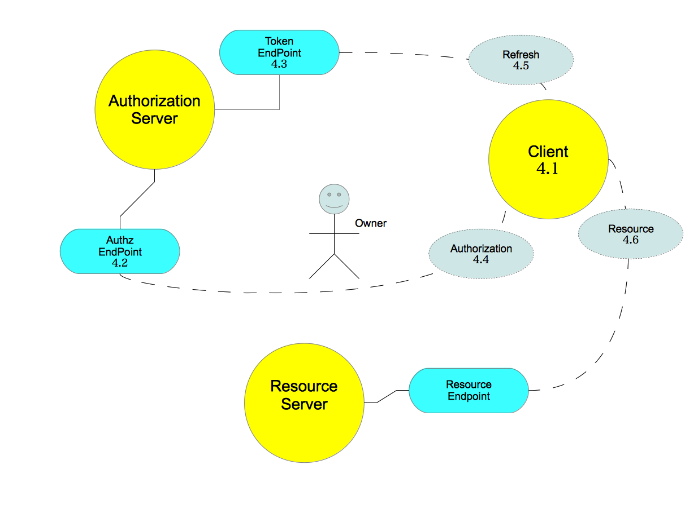
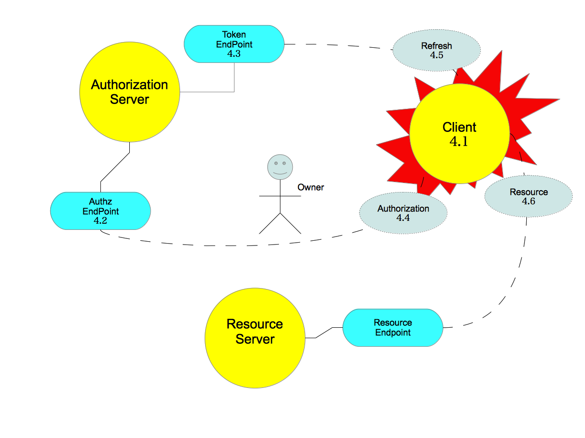
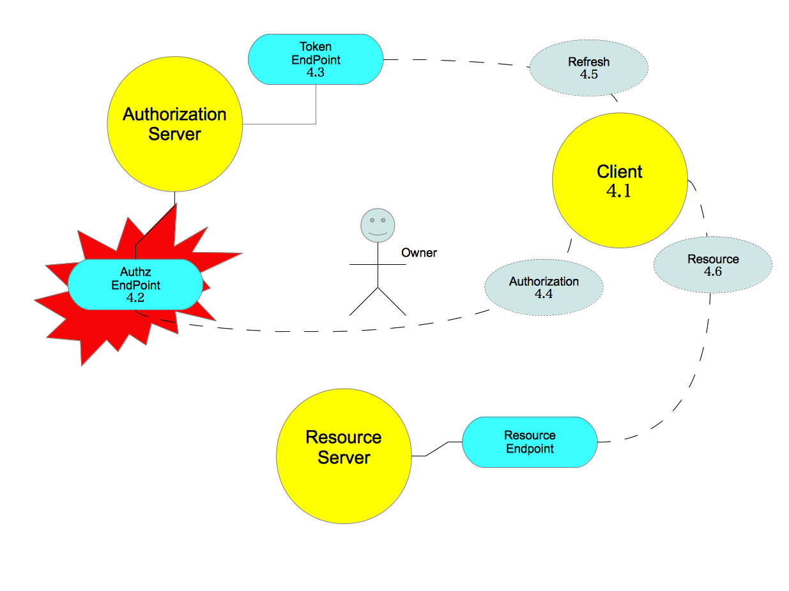
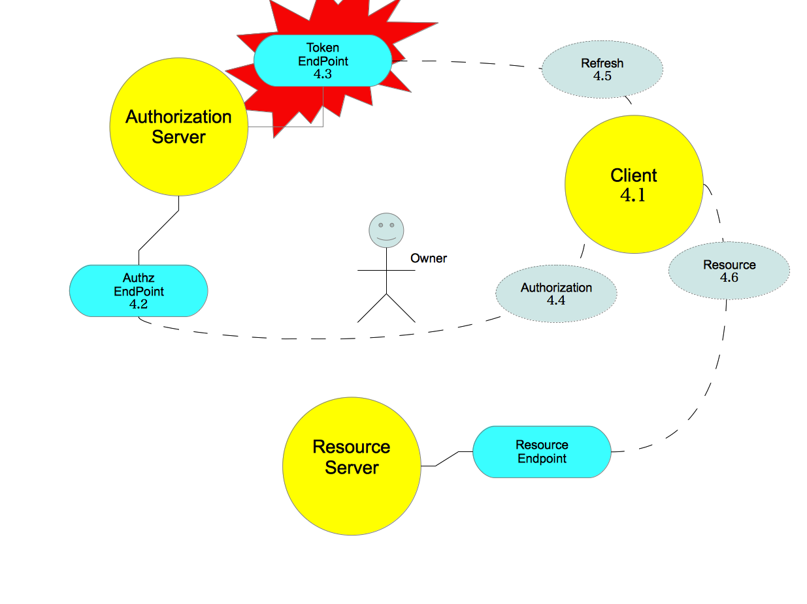
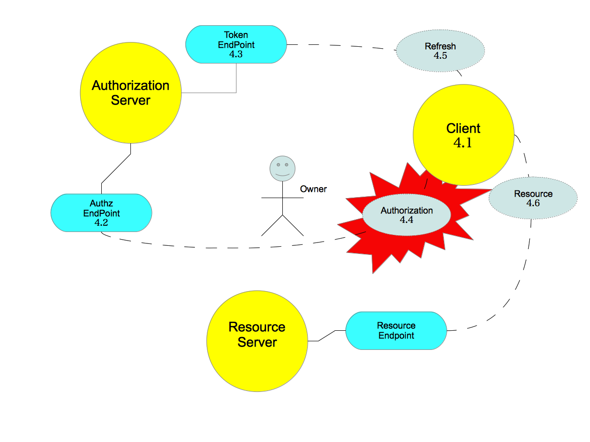
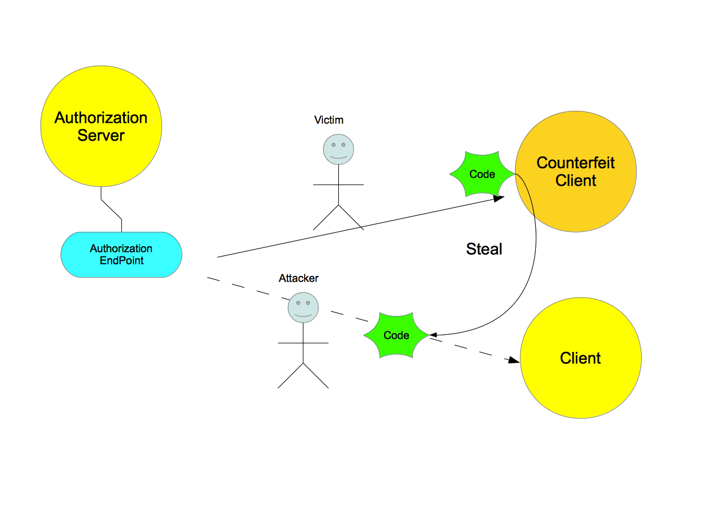
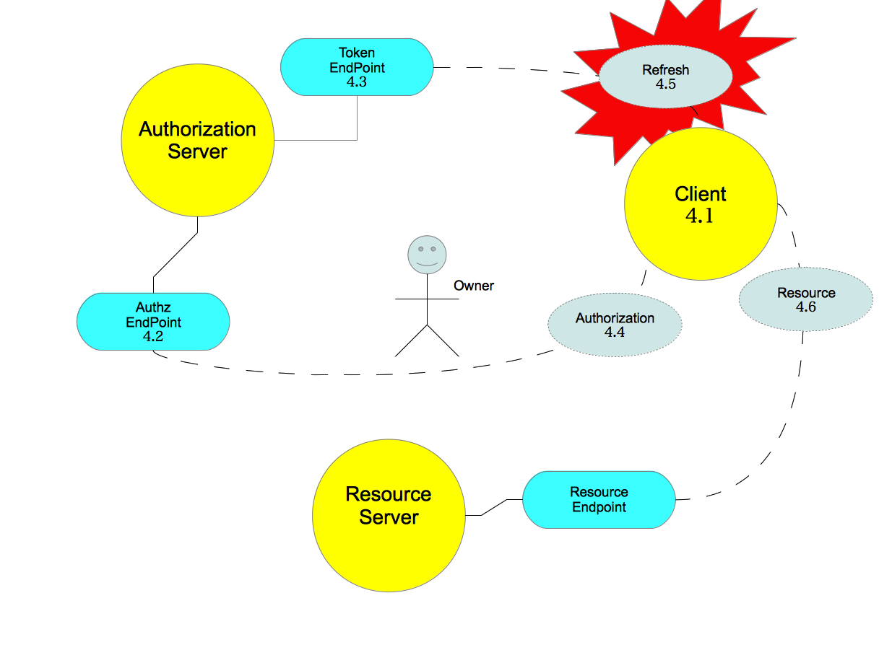
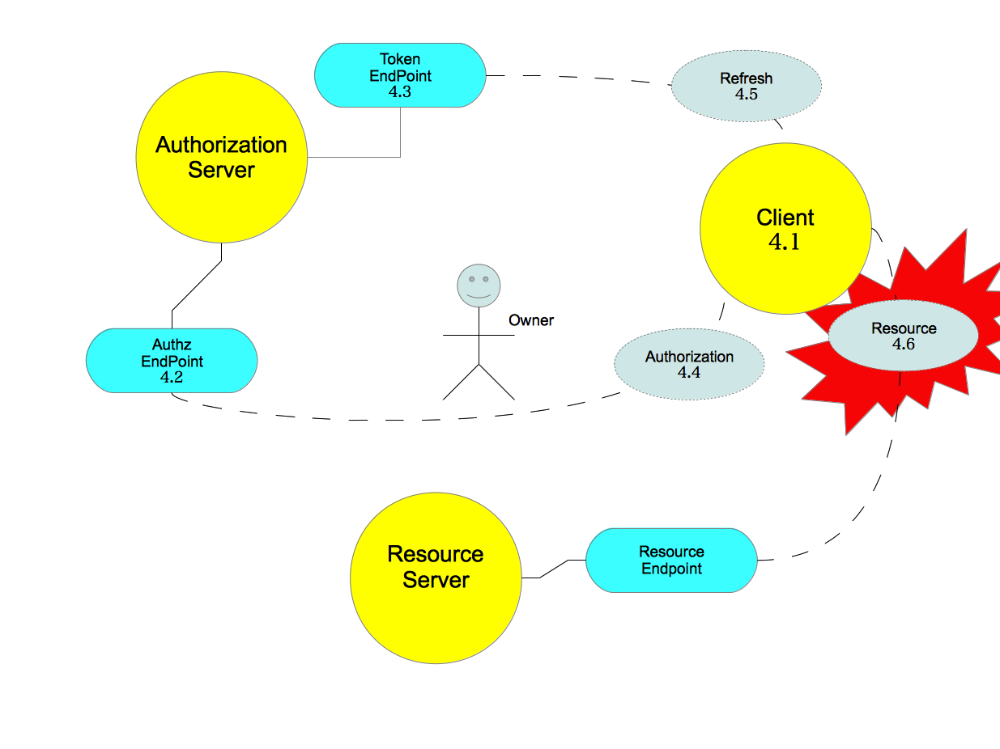
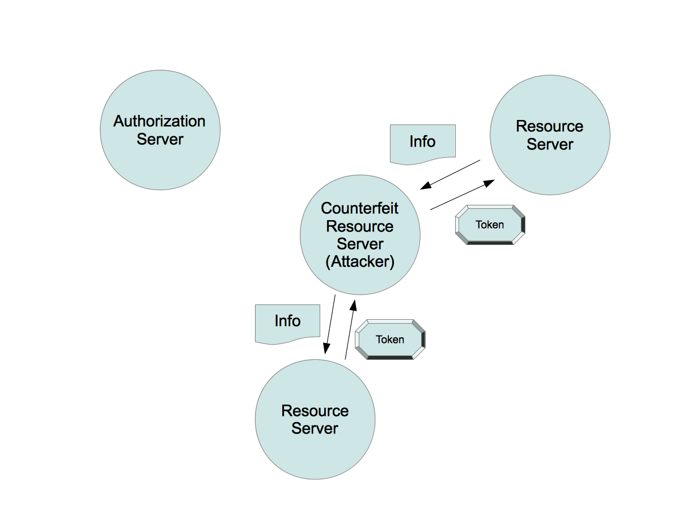
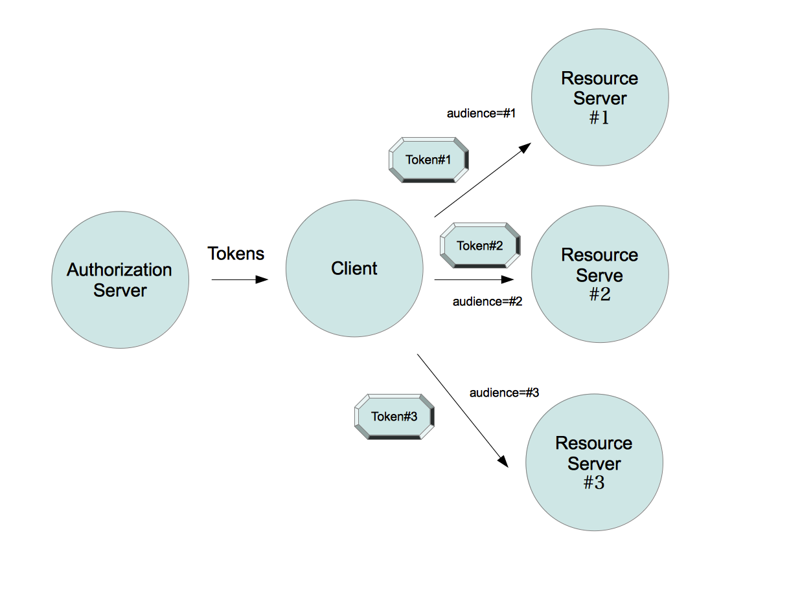

Auth 2.0 Threat Model and Security Considerations¶
draft-ietf-oauth-v2-threatmodel-01
Table of Contents
- Auth 2.0 Threat Model and Security Considerations
- Abstract
- 1. Introduction
- 2. Overview
- 3. Security Features
- 4. Security Threat Model
- 4.1. Clients
- 4.2. Authorization Endpoint
- 4.3. Token endpoint
- 4.3.1. Threat: Eavesdropping access tokens
- 4.3.2. Threat: Obtain access tokens from authorization server database
- 4.3.3. Threat: Obtain client credentials over non secure transport
- 4.3.4. Threat: Obtain client secret from authorization server database
- 4.3.5. Threat: Obtain client secret by online guessing
- 4.3.6. Threat: DoS on dynamic client secret creation
- 4.4. Obtaining Authorization
- 4.4.1. Authorization Code
- 4.4.1.1. Threat: Eavesdropping or leaking authorization codes
- 4.4.1.2. Threat: Obtain authorization codes from authorization server database
- 4.4.1.3. Threat: Online guessing of authorization codes
- 4.4.1.4. Threat: Malicious client obtains authorization
- 4.4.1.5. Threat: Authorization code phishing
- 4.4.1.6. Threat: User session impersonation
- 4.4.1.7. Threat: Authorization code leakage through counterfeit client
- 4.4.1.8. Threat: CSRF attack against redirect-uri
- 4.4.1.9. Threat: Clickjacking attack against authorization
- 4.4.1.10. Threat: Resource Owner Impersonation
- 4.4.1.11. Threat: DoS, Exhaustion of resources attacks
- 4.4.1.12. Threat: DoS using manufactured authorization codes
- 4.4.2. Implicit Grant
- 4.4.3. Resource Owner Password Credentials
- 4.4.3.1. Threat: Accidental exposure of passwords at client site
- 4.4.3.2. Threat: Client obtains scopes without end-user authorization
- 4.4.3.3. Threat: Client obtains refresh token through automatic authorization
- 4.4.3.4. Threat: Obtain user passwords on transport
- 4.4.3.5. Threat: Obtain user passwords from authorization server database
- 4.4.3.6. Threat: Online guessing
- 4.4.1. Authorization Code
- 4.5. Refreshing an Access Token
- 4.6. Accessing Protected Resources
- 4.6.1. Threat: Eavesdropping access tokens on transport
- 4.6.2. Threat: Replay authorized resource server requests
- 4.6.3. Threat: Guessing access tokens
- 4.6.4. Threat: Access token phishing by counterfeit resource server
- 4.6.5. Threat: Abuse of token by legitimate resource server or client
- 4.6.6. Threat: Leak of confidential data in HTTP-Proxies
- 4.6.7. Threat: Token leakage via logfiles and HTTP referrers
- 5. Security Considerations
- 5.1. General
- 5.1.1. Confidentiality of Requests
- 5.1.2. Server authentication
- 5.1.3. Always keep the resource owner informed
- 5.1.4. Credentials
- 5.1.5. Tokens (access, refresh, code)
- 5.1.5.5. Bind tokens to a particular resource server (Audience)
- 5.1.6. Access tokens
- 5.2. Authorization Server
- 5.2.1. Authorization Codes
- 5.2.2. Refresh tokens
- 5.2.3. Public client authentication and authorization
- 5.2.3.1. Don’t issue secrets to public clients or clients with inappropriate security policy
- 5.2.3.2. Public clients without secret require user consent
- 5.2.3.3. Client_id only in combination with redirect_uri
- 5.2.3.4. Deployment-specific client secrets
- 5.2.3.5. Validation of pre-registered redirect_uri
- 5.2.3.6. Client secret revocation
- 5.2.3.7. Use strong client authentication (e.g. client_assertion / client_token)
- 5.2.4. End-user authorization
- 5.3. Client App Security
- 5.3.1. Don’t store credentials in code or resources bundled with software packages
- 5.3.2. Standard web server protection measures (for config files and databases)
- 5.3.3. Store secrets in a secure storage
- 5.3.4. Utilize device lock to prevent unauthorized device access
- 5.3.5. Platform security measures
- 5.3.6. Link state parameter to user agent session
- 5.4. Resource Servers
- 5.1. General
- 6. IANA Considerations
- 7. Acknowledgements
- 8. References
Abstract¶
This document gives security considerations based on a comprehensive threat model for the OAuth 2.0 Protocol.
1. Introduction¶
This document gives security considerations based on a comprehensive threat model for the OAuth 2.0 Protocol [I-D.ietf-oauth-v2]. It contains the following content:
- Documents any assumptions and scope considered when creating the threat model.
- Describes the security features in-built into the OAuth protocol and how they are intended to thwart [1] attacks.
- Gives a comprehensive threat model for OAuth and describes the respective counter measures to thwart those threats.
| [1] | To prevent the occurrence, realization, or attainment of: They thwarted her plans. |
Threats include any intentional attacks on OAuth tokens and resources protected by OAuth tokens as well as security risks introduced if the proper security measures are not put in place.
Threats are structured along the lines of the protocol structure to aid development teams implement each part of the protocol securely. For example all threats for granting access or all threats for a particular client profile or all threats for protecting the resource server.
2. Overview¶
2.1. Scope¶
The security considerations document only considers clients bound to a particular deployment as supported by [I-D.ietf-oauth-v2]. Such deployments have the following characteristics:
- Resource server URLs are static and well-known at development time, authorization server URLs can be static or discovered.
- Token scope values (e.g. applicable URLs and methods) are well-known at development time.
- Client registration: Since registration of clients is out of scope of the current core spec, this document assumes a broad variety of options from static registration during development time to dynamic registration at runtime.
The following are considered out of scope :
- Communication between authorization server and resource server
- Token formats
- Except for “Resource Owner Password Credentials” (see [I-D.ietf-oauth-v2], section 4.3), the mechanism used by authorization servers to authenticate the user
- Mechanism by which a user obtained an assertion and any resulting attacks mounted as a result of the assertion being false.
- Clients are not bound to a specific deployment: An example could by a mail client with support for contact list access via the portable contacts API (see [portable-contacts]). Such clients cannot be registered upfront with a particular deployment and must dynamically discover the URLs relevant for the OAuth protocol.
2.2. Attack Assumptions¶
The following assumptions relate to an attacker and resources available to an attacker:
- It is assumed the attacker has full access to the network between the client and authorization servers and the client and the resource server, respectively. The attacker may eaves drop on any communications between those parties. He is not assumed to have access to communication between authorization and resource server.
- It is assumed an attacker has unlimited resources to mount an attack.
- It is assumed that 2 of the 3 parties involved in the OAuth protocol may collude [2] to mount an attack against the 3rd party. For example, the client and authorization server may be under control of an attacker and collude to trick a user to gain access to resources.
| [2] | To act together secretly to achieve a fraudulent, illegal, or deceitful purpose; conspire. |
2.3. Architectural assumptions¶
This section documents the assumptions about the features, limitations and design options of the different entities of a OAuth deployment along with the security-sensitive data-elements managed by those entity.
These assumptions are the foundation of the treat analysis.
The OAuth protocol leaves deployments with a certain degree of freedom how to implement and apply the standard. The core specification defines the core concepts of an authorization server and a resource server.
Both servers can be implemented in the same server entity, or they may also be different entities. The later is typically the case for multi-service providers with a single authentication and authorization system, and are more typical in middleware architectures.
Compoents:
2.3.1. Authorization Servers¶
The following data elements MAY be stored or accessible on the authorization server:
- user names and passwords
- client ids and secrets
- client-specific refresh tokens
- client-specific access tokens (in case of handle-based design)
- HTTPS certificate/key
- per authorization process (in case of handle-based design): redirect_uri, client_id, authorization code
2.3.2. Resource Server¶
The following data elements MAY be stored or accessible on the resource server:
- user data (out of scope)
- HTTPS certificate/key
- authz server credentials (handle-based design), or
- authz server shared secret/public key (assertion-based design)
- access tokens (per request)
It is assumed that a resource server has no knowledge of refresh tokens, user passwords, or client secrets.
2.3.3. Client¶
A full definition of different client types and profiles is given in [I-D.ietf-oauth-v2], Section 2.1.
The following data elements are stored or accessible on the client:
o client id (and client secret or corresponding client credential)
- o one or more refresh tokens (persistent) and access tokens
- (transient) per end-user or other security-context or delegation context
o trusted CA certificates (HTTPS)
o per authorization process: redirect_uri, authorization code
3. Security Features¶
These are some of the security features which have been built into the OAuth 2.0 protocol to mitigate attacks and security issues.
Features:
3.1. Tokens¶
OAuth makes extensive use of all kinds of tokens (access tokens, refresh tokens, authorization codes). The information content of a token can be represented in two ways as follows:
- Handle
- (or artifact) a reference to some internal data structure within the authorization server, the internal data structure contains the attributes of the token, such as user id, scope, etc. Handles enable simple revocation and do not require cryptographic mechanisms to protected token content from being modified. On the other hand, handles require communication between issuing and consuming entity (e.g. authorization and resource server) in order to validate the token and obtain token-bound data. This communication might have an negative impact on performance and scalability if both entities reside on different system. Handles are therefore typically used if the issuing and consuming entity are the same. A ‘handle’ token is often referred to as an ‘opaque’ token because the resource server does not need to be able to interpret the token directly, it simply uses the token.
- Assertions
- (aka self-contained token) a parseable [3] token. An assertion typically has a duration, an audience, and is digitally signed containing information about the user and the client. Examples of assertion formats are SAML assertions and Kerberos tickets. Assertions can typically directly be validated and used by a resource server without interactions with the authorization server. This results in better performance and scalability in deployment where issuing and consuming entity reside on different systems. Implementing token revocation is more difficult with assertions than with handles.
| [3] | To break (a sentence) down into its component parts of speech with an explanation of the form, function, and syntactical relationship of each part. |
Tokens can be used in two ways to invoke requests on resource servers as follows:
- bearer token
- A ‘bearer token’ is a token that can be used by any client who has received the token (e.g. [I-D.ietf-oauth-v2-bearer]). Because mere possession is enough to use the token it is important that communication between endpoints be secured to ensure that only authorized end-points may capture the token. The bearer token is convenient to client applications as it does not require them to do anything to use them (such as a proof of identity). Bearer tokens have similar characteristics to web single-sign-on (SSO) cookies used in browsers.
- proof token
- A ‘proof token’ is a token that can only be used by a specific client. Each use of the token, requires the client to perform some action that proves that it is the authorized user of the token. Examples of this are MAC tokens, which require the client to digitally sign the resource request with a secret corresponding to the particular token send with the request (e.g.[I-D.ietf-oauth-v2-http-mac]).
3.1.1. Scope¶
A Scope represents the access authorization associated with a particular token with respect to resource servers, resources and methods on those resources. Scopes are the OAuth way to explicitly manage the power associated with an access token. A scope can be controlled by the authorization server and/or the end-user in order to limit access to resources for OAuth clients these parties deem [4] less secure or trustworthy.
Optionally, the client can request the scope to apply to the token but only for lesser scope than would otherwise be granted, e.g. to reduce the potential impact if this token is sent over non secure channels. A scope is typically complemented by a restriction on a token’s lifetime.
| [4] | To regard as; consider: |
3.1.2. Expires_In¶
Expires_In allows an authorization server (based on its policies or on behalf of the end-user) to limit the lifetime of the access token.
This mechanisms can be used to issue short-living tokens to OAuth clients the authorization server deems less secure or where sending tokens over non secure channels.
3.2. Access Token¶
An access token is used by a client to access a resource. Access tokens typically have short life-spans (minutes or hours) that cover typical session lifetimes.
An access token may be refreshed through the use of a refresh token. The short lifespan of an access token in combination with the usage of refresh tokens enables the possibility of passive revocation of access authorization on the expiry of the current access token.
3.3. Refresh Token¶
A refresh token represents a long-lasting authorization of a certain client to access resources on behalf of a resource owner. Such tokens are exchanged between client and authorization server, only. Clients use this kind of token to obtain (“refresh”) new access tokens used for resource server invocations.
A refresh token, coupled with a short access token lifetime, can be used to grant longer access to resources without involving end user authorization. This offers an advantage where resource servers and authorization servers are not the same entity, e.g. in a distributed environment, as the refresh token must always be exchanged at the authorization server. The authorization server can revoke the refresh token at any time causing the granted access to be revoked once the current access token expires. Because of this, a short access token lifetime is important if timely revocation is a high priority.
The refresh token is also a secret bound to the client identifier and _instance_ which originally requested the authorization and representing the original resource owner grant. This is ensured by the authorization process as follows:
- The resource owner and user-agent safely deliver the authorization code to the client instance in first place.
- The client uses it immediately in secure transport-level communications to the authorization server and then securely stores the long-lived refresh token.
- The client always uses the refresh token in secure transport-level communications to the authorization server to get an access token (and optionally rollover the refresh token).
So as long as the confidentiality of the particular token can be ensured by the client, a refresh tokens can also be used as an alternative mean to authenticate the client instance itself.
3.4. Authorization Code¶
An Authorization Code represents the intermediary result of a successful end-user authorization process and is used by the client to obtain access and refresh token. Authorization codes are sent to the client’s redirection URI instead of tokens for two purposes.
- Instead of (longer-lasting) tokens, the short-living authorization code is exposed to potential attackers via URI query parameters (HTTP referrer), browser cacher or log file entries.
- It is much simpler to authenticate clients during the direct request between client and authorization server than in the context of the indirect authorization request. The later would require digital signatures.
3.5. Redirection URI¶
A redirection URI helps to detect malicious client and prevents phishing attacks from clients attempting to trick the user into believing the phisher is the client.
The value of the actual redirection URI used in the authorization request has to be presented and is verified when an authorization code is exchanged for tokens. This helps to prevent attacks, where the authorization code is revealed through redirectors and counterfeit web application clients.
The authorization server requires public clients and confidential clients using implicit grant type to pre-register their redirect URIs and validate agains the registered redirection URI in the authorization request.
3.6. State parameter¶
The state parameter is used to link requests and callbacks to prevent CSRF attacks where an attacker authorizes access to his own resources and then tricks a users into following a redirect with the attacker’s token. It should bind to the authenticated state in a user agent and the user agent must be capable of keeping it in a location accessible only by the client and user agent, i.e. protected by same-origin policy
3.7. Client Identity¶
Authentication protocols have typically not taken into account the identity of the software component acting on behalf of the end-user.
OAuth does this in order to increase the security level in delegated authorization scenarios and because the client will be able to act without the user being present.
OAuth uses the _client_id_ (client identity) to collate associated request to the same originator, such as
- particular end-user authorization process and the corresponding request on the tokens endpoint to exchange the authorization code for tokens or
- the initial authorization and issuance of a tokens by an end-user to a particular client and sub-sequent requests by this client to obtain tokens w/o user consent (automatic processing of repeated authorization)
The client identity may also be used by the authorization server to display relevant registration information to a user when requesting consent for scope requested by a particular client. The client identity may be used to limit the number of request for a particular client or to charge the client per request. Client Identity may furthermore be useful to differentiate access by different clients, e.g. in server log files.
OAuth defines two client types, confidential and public, based on their ability to authenticate securely with the authorization server (i.e. ability to maintain the confidentiality of their client credentials). Confidential clients are capable of maintaining the confidentiality of client credentials (i.e. a client secret associated with the client identifier) or capable of secure client authentication using other means, such as a client assertion (e.g. SAML) or key cryptography. The latter is considered more secure.
The authorization server should determine whether the client is capable of keeping its secret confidential or using secure authentication. Alternatively, the end-user can verify the identity of the client, e.g. by only installing trusted applications. The redirection URI can be used to prevent delivering credentials to a counterfeit client after obtaining end-user authorization, but can’t be used to verify the client identity.
Clients can be categorized as follows based on the client type, profile (e.g. native vs web application) and deployment model:
Deployment-independent client_id with pre-registered redirect_uri and without client_secret¶
Such an identity is used by multiple installations of the same software package. The identity of such a client can only be validated with the help of the end-user. This is a viable option for native applications in order to identify the client for the purpose of displaying meta information about the client to the user and to differentiate clients in log files. Revocation of such an identity will affect ALL deployments Deployment-independent client_id with pre-registered redirect_uri and with client_secret This is an option for native applications only, since web application would require different redirect URIs. This category is not advisable because the client secret cannot be protected appropriately (see Section 4.1.1). Due to its security weaknesses, such client identities have the same trust level as deployment-independent clients without secret. Revocation will affect ALL deployments.
Deployment-specific client_id with pre-registered redirect_uri and with client_secret¶
The client registration process insures the validation of the client’s properties, such as redirection URI, website address, web site name, contacts. Such a client identity can be utilized for all relevant use cases cited above. This level can be achieved for web applications in combination with a manual or user-bound registration process. Achieving this level for native applications is much more difficult. Either the installation of the application is conducted by an administrator, who validates the clients authenticity, or the process from validating the application to the installation of the application on the device and the creation of the client credentials is controlled end-to-end by a single entity (e.g. application market provider). Revocation will affect a single deployment only.
Deployment-specific client_id with client_secret without validated properties¶
Such a client can be recognized by the authorization server in transactions with subsequent requests (e.g. authorization and token issuance, refresh token issuance and access token refreshment). The authorization server cannot assure any property of the client to end-users. Automatic processing of re-authorizations could be allowed as well. Such client credentials can be generated automatically without any validation of client properties, which makes it another option especially for native applications. Revocation will affect a single deployment only.
4. Security Threat Model¶
This sections gives a comprehensive threat model of OAuth 2.0.
Threats are grouped first by attacks directed against an OAuth component, which are client, authorization server, and resource server.
Subsequently, they are grouped by flow, e.g. obtain token or access protected resources. Every countermeasure description refers to a detailed description in Section 5.
4.1. Clients¶
This section describes possible threats directed to OAuth clients.
Threats:
4.1.1. Threat: Obtain Client Secrets¶
The attacker could try to get access to the secret of a particular client in order to:
- replay its refresh tokens and authorization codes, or
- obtain tokens on behalf of the attacked client with the privileges of that client.
The resulting impact would be:
- Client authentication of access to authorization server can be bypassed
- Stolen refresh tokens or authorization codes can be replayed
Depending on the client category, the following attacks could be utilized to obtain the client secret.
Attack: Obtain Secret From Source Code or Binary.¶
This applies for all client profiles. For open source projects, secrets can be extracted directly from source code in their public repositories. Secrets can be extracted from application binaries just as easily when published source is not available to the attacker. Even if an application takes significant measures to obfuscate secrets in their application distribution one should consider that the secret can still be reverse-engineered by anyone with access to a complete functioning application bundle or binary.
_Countermeasures:_
- Don’t issue secrets to public clients or clients with inappropriate security policy - Section 5.2.3.1
- Public clients require user consent - Section 5.2.3.2
- Use deployment-specific client secrets - Section 5.2.3.4
- Client secret revocation - Section 5.2.3.6
Attack: Obtain a Deployment-Specific Secret.¶
An attacker may try to obtain the secret from a client installation, either from a web site (web server) or a particular devices (native application).
_Countermeasures:_
- Web server: apply standard web server protection measures (for config files and databases) - Section 5.3.2
- Native applications: Store secrets in a secure local storage - Section 5.3.3
- Client secret revocation - Section 5.2.3.6
4.1.2. Threat: Obtain Refresh Tokens¶
Depending on the client type, there are different ways refresh tokens may be revealed to an attacker. The following sub-sections give a more detailed description of the different attacks with respect to different client types and further specialized countermeasures. Some generally applicable countermeasure to mitigate such attacks shall be given in advance:
The authorization server must validate the client id associated with the particular refresh token with every refresh request - Section 5.2.2.2
Limited scope tokens - Section 5.1.5.1
Refresh token revocation - Section 5.2.2.4
Client secret revocation - Section 5.2.3.6
Refresh tokens can automatically be replaced in order to detect unauthorized token usage by another party (Refresh Token Rotation) - Section 5.2.2.3
Attack: Obtain Refresh Token from Web application.¶
An attack may obtain the refresh tokens issued to a web server client. Impact: Exposure of all refresh tokens on that side.
Countermeasures:
- Standard web server protection measures - Section 5.3.2
- Use strong client authentication (e.g. client_assertion / client_token), so the attacker cannot obtain the client secret required to exchange the tokens - Section 5.2.3.7
Attack: Obtain Refresh Token from Native clients.¶
On native clients, leakage of a refresh token typically affects a single user, only.
Read from local filesystem:
The attacker could try get file system access on the device and read the refresh tokens. The attacker could utilize a malicious application for that purpose.
Countermeasures:
- Store secrets in a secure storage - Section 5.3.3
- Utilize device lock to prevent unauthorized device access - Section 5.3.4
Steal device:
The host device (e.g. mobile phone) may be stolen. In that case, the attacker gets access to all applications under the identity of the legitimate user.
Countermeasures:
- Utilize device lock to prevent unauthorized device access - Section 5.3.4
- Where a user knows the device has been stolen, they can revoke the affected tokens - Section 5.2.2.4
Clone device:
All device data and applications are copied to another device. Applications are used as-is on the target device.
Countermeasures:
- Combine refresh token request with device identification - Section 5.2.2.5
- Refresh Token Rotation - Section 5.2.2.3
- Where a user knows the device has been cloned, they can use this countermeasure - Refresh Token Revocation - Section 5.2.2.4
4.1.3. Threat: Obtain Access Tokens¶
Depending on the client type, there are different ways access tokens may be revealed to an attacker. Access tokens could be stolen from the device if the application stores them in a storage, which is accessible to other applications.
Impact: Where the token is a bearer token and no additional mechanism is used to identify the client, the attacker can access all resources associated with the token and its scope.
Countermeasures:
- Keep access tokens in transient memory and limit grants: Section 5.1.6
- Limited scope tokens - Section 5.1.5.1
- Keep access tokens in private memory or apply same protection means as for refresh tokens - Section 5.2.2
- Keep access token lifetime short - Section 5.1.5.3
4.1.4. Threat: End-user credentials phished using compromised or embedded browser¶
A malicious application could attempt to phish end-user passwords by misusing an embedded browser in the end-user authorization process, or by presenting its own user-interface instead of allowing trusted system browser to render the authorization user interface.
By doing so, the usual visual trust mechanisms may be bypassed (e.g. TLS confirmation, web site mechanisms). By using an embedded or internal client application user interface, the client application has access to additional information it should not have access to (e.g. uid/ password).
Impact: If the client application or the communication is compromised, the user would not be aware and all information in the authorization exchange could be captured such as username and password.
Countermeasures:
- o Client developers and end-user can be educated
- to trust an external System-Browser only.
- o Client applications could be validated prior publication
- in a application market.
- o Client developers should not collect authentication information directly
- from users and should instead use redirects to and back from a trusted external system-browser.
4.1.5. Threat: Open Redirectors on client¶
An open redirector is an endpoint using a parameter to automatically redirect a user-agent to the location specified by the parameter value without any validation.
If the authorization server allows the client to register only part of the redirection URI, an attacker can use an open redirector operated by the client to construct a redirection URI that will pass the authorization server validation but will send the authorization code or access token to an endpoint under the control of the attacker.
Impact: An attacker could gain access to authorization codes or access tokens
Countermeasure
o require clients to register full redirection URI Section 5.2.3.5
4.2. Authorization Endpoint¶
Threats:
4.2.1. Threat: Password phishing by counterfeit authorization server¶
OAuth makes no attempt to verify the authenticity of the Authorization Server. A hostile party could take advantage of this by intercepting the Client’s requests and returning misleading or otherwise incorrect responses. This could be achieved using DNS or ARP spoofing. Wide deployment of OAuth and similar protocols may cause Users to become inured [5] to the practice of being redirected to websites where they are asked to enter their passwords.
If Users are not careful to verify the authenticity of these websites before entering their credentials, it will be possible for attackers to exploit this practice to steal Users’ passwords.
| [5] | To habituate to something undesirable, especially by prolonged subjection; accustom: “Though the food became no more palatable, he soon became sufficiently inured to it” (John Barth). |
Countermeasures:
- o Authorization servers should consider such attacks
- when developing services based on OAuth, and should require transport-layer security for any requests where the authenticity of the authorization server or of request responses is an issue (see Section 5.1.2 ).
- o Authorization servers should attempt to educate Users
- about the risks phishing attacks pose, and should provide mechanisms that make it easy for users to confirm the authenticity of their sites.
Note
UX ?
4.2.2. Threat: User unintentionally grants too much access scope¶
When obtaining end user authorization, the end-user may not understand the scope of the access being granted and to whom or they may end up providing a client with access to resources which should not be permitted.
Countermeasures:
- o Explain the scope (resources and the permissions) the user is about to grant
- in a understandable way - Section 5.2.4.2
- o Narrow scope based on client -
- When obtaining end user authorization and where the client requests scope, the authorization server may want to consider whether to honour that scope based on who the client is. That decision is between the client and authorization server and is outside the scope of this spec. The authorization server may also want to consider what scope to grant based on the client type, e.g. providing lower scope to public clients. - Section 5.1.5.1
4.2.3. Threat: Malicious client obtains existing authorization by fraud¶
Authorization servers may wish to automatically process authorization requests from clients which have been previously authorized by the user. When the user is redirected to the authorization server’s end-user authorization endpoint to grant access, the authorization server detects that the user has already granted access to that particular client. Instead of prompting the user for approval, the authorization server automatically redirects the user back to the client.
A malicious client may exploit that feature and try to obtain such an authorization code instead of the legitimate client.
Countermeasures:
- o Authorization servers should not automatically process repeat authorizations
- to public clients or unless the client is validated using a pre-registered redirect URI (Section 5.2.3.5 )
- o Authorization servers can mitigate the risks associated with automatic processing
- by limiting the scope of Access Tokens obtained through automated approvals - Section 5.1.5.1
4.2.4. Threat: Open redirector¶
An attacker could use the end-user authorization endpoint and the redirection URI parameter to abuse the authorization server as an open redirector.
An open redirector is an endpoint using a parameter to automatically redirect a user-agent to the location specified by the parameter value without any validation.
Impact: An attacker could utilize a user’s trust in your authorization server to launch a phishing attack.
Countermeasure
o require clients to register full redirection URI Section 5.2.3.5
- o don’t redirect to redirection URI,
- if client identity or redirection URI could not be verified Section 5.2.3.5
4.3. Token endpoint¶
Threats:
- 4.3.1. Threat: Eavesdropping access tokens
- 4.3.2. Threat: Obtain access tokens from authorization server database
- 4.3.3. Threat: Obtain client credentials over non secure transport
- 4.3.4. Threat: Obtain client secret from authorization server database
- 4.3.5. Threat: Obtain client secret by online guessing
- 4.3.6. Threat: DoS on dynamic client secret creation
4.3.1. Threat: Eavesdropping access tokens¶
Attackers may attempts to eavesdrop access token on transit from the authorization server to the client.
Impact: The attacker is able to access all resources with the permissions covered by the scope of the particular access token.
Countermeasures:
- o Authorization servers MUST ensure that these transmissions are protected
- using transport-layer mechanisms such as TLS or SSL (see Section 5.1.1).
- o If end-to-end confidentiality cannot be guaranteed,
- reducing scope (see Section 5.1.5.1) and expiry time (Section 5.1.5.3) for access tokens can be used to reduce the damage in case of leaks.
4.3.2. Threat: Obtain access tokens from authorization server database¶
This threat is applicable if the authorization server stores access tokens as handles in a database. An attacker may obtain access tokens from the authorization server’s database by gaining access to the database or launching a SQL injection attack.
Impact: disclosure of all access tokens
Countermeasures:
o System security measures - Section 5.1.4.1.1
o Store access token hashes only - Section 5.1.4.1.3
o Standard SQL injection Countermeasures - Section 5.1.4.1.2
4.3.3. Threat: Obtain client credentials over non secure transport¶
An attacker could attempt to eavesdrop the transmission of client credentials between client and server during the client authentication process or during OAuth token requests.
Impact:
Revelation of a client credential enabling the possibility for phishing or imitation of a client service.
Countermeasures:
- Implement transport security through Confidentiality of Requests
- Alternative authentication means, which do not require to send plaintext credentials over the wire (Examples: Digest authentication)
4.3.4. Threat: Obtain client secret from authorization server database¶
An attacker may obtain valid client_id/secret combinations from the authorization server‘s database by gaining access to the database or launching a SQL injection attack.
Impact: disclosure of all client_id/secret combinations. This allows the attacker to act on behalf of legitimate clients.
Countermeasures:
o Ensure proper handling of credentials as per Credential Storage Protection.
4.3.5. Threat: Obtain client secret by online guessing¶
An attacker may try to guess valid client_id/secret pairs.
Impact: disclosure of single client_id/secret pair.
Countermeasures:
o High entropy of secrets - Section 5.1.4.2.2
o Lock accounts - Section 5.1.4.2.3
o Use Strong Client Authentication - Section 5.2.3.7
4.3.6. Threat: DoS on dynamic client secret creation¶
If an authorization servers includes a nontrivial amount of entropy in client secrets and if the authorization server automatically grants them, an attacker could exhaust the pool by repeatedly applying for them.
Countermeasures:
- o The authorization server should consider some verification step for new clients.
- The authorization server should include a nontrivial amount of entropy in client secrets.
4.4. Obtaining Authorization¶
This section covers threats which are specific to certain flows utilized to obtain access tokens.
Each flow is characterized by response types and/or grant types on the end-user authorization and tokens endpoint, respectively.
Flows:
4.4.1. Authorization Code¶
Threat list:
- 4.4.1.1. Threat: Eavesdropping or leaking authorization codes
- 4.4.1.2. Threat: Obtain authorization codes from authorization server database
- 4.4.1.3. Threat: Online guessing of authorization codes
- 4.4.1.4. Threat: Malicious client obtains authorization
- 4.4.1.5. Threat: Authorization code phishing
- 4.4.1.6. Threat: User session impersonation
- 4.4.1.7. Threat: Authorization code leakage through counterfeit client
- 4.4.1.8. Threat: CSRF attack against redirect-uri
- 4.4.1.9. Threat: Clickjacking attack against authorization
- 4.4.1.10. Threat: Resource Owner Impersonation
- 4.4.1.11. Threat: DoS, Exhaustion of resources attacks
- 4.4.1.12. Threat: DoS using manufactured authorization codes
4.4.1.1. Threat: Eavesdropping or leaking authorization codes¶
An attacker could try to eavesdrop transmission of the authorization code between authorization server and client. Furthermore, authorization codes are passed via the browser which may unintentionally leak those codes to untrusted web sites and attackers by different ways:
- Referrer headers: browsers frequently pass a “referer” header when a web page embeds content, or when a user travels from one web page to another web page. These referrer headers may be sent even when the origin site does not trust the destination site. The referee header is commonly logged for traffic analysis purposes.
- Request logs: web server request logs commonly include query parameters on requests.
- Open redirectors: web sites sometimes need to send users to another destination via a redirector. Open redirectors pose a particular risk to web-based delegation protocols because the redirector can leak verification codes to untrusted destination sites.
- Browser history: web browsers commonly record visited URLs in the browser history. Another user of the same web browser may be able to view URLs that were visited by previous users.
Note:
A description of a similar attacks on the SAML protocol can be found at http://www.oasis-open.org/committees/download.php/3405/ oasis-sstc-saml-bindings-1.1.pdf (S.4.1.1.9.1), http://www.thomasgross.net/publications/papers/ GroPfi2006-SAML2_Analysis_Janus.WSSS_06.pdf and http:// www.oasis-open.org/committees/download.php/11191/ sstc-gross-sec-analysis-response-01.pdf.
Countermeasures:
- Authorization server as well as the client MUST ensure that these transmissions are protected using transport-layer mechanisms such as TLS or SSL (see Section 5.1.1).
- The authorization server shall require the client to authenticate wherever possible, so the binding of the authorization code to a certain client can be validated in a reliable way (see Section 5.2.4.4 ).
- Limited duration of authorization codes - Section 5.1.5.3
- The authorization server SHOULD enforce a one time usage restriction (see Section 5.1.5.4).
- If an Authorization Server observes multiple attempts to redeem a authorization code, the Authorization Server may want to revoke all tokens granted based on the authorization code (see Section 5.2.1.1 ).
- In the absence of these countermeasures, reducing scope (Section 5.1.5.1) and expiry time (Section 5.1.5.3) for access tokens can be used to reduce the damage in case of leaks.
- The client server may reload the target page of the redirection URI in order to automatically cleanup the browser cache.
4.4.1.2. Threat: Obtain authorization codes from authorization server database¶
This threat is applicable if the authorization server stores authorization codes as handles in a database.
An attacker may obtain authorization codes from the authorization server’s database by gaining access to the database or launching a SQL injection attack.
Impact: disclosure of all authorization codes, most likely along with the respective redirect_uri and client_id values.
- Credential storage protection can be employed - Section 5.1.4.1
- System security measures - Section 5.1.4.1.1
- Store access token hashes only - Section 5.1.4.1.3
- Standard SQL injection countermeasures - Section 5.1.4.1.2
4.4.1.3. Threat: Online guessing of authorization codes¶
An attacker may try to guess valid authorization code values and send it using the grant type “code” in order to obtain a valid access token.
Impact: disclosure of single access token, probably also associated refresh token.
Countermeasures:
- For handle-based designs: Section 5.1.5.11
- For assertion-based designs: Section 5.1.5.9
- Authenticate the client, adds another value the attacker has to guess - Section 5.2.3.4
- Binding of authorization code to redirection URI, adds another value the attacker has to guess - Section 5.2.4.5
- Short expiration time - Section 5.1.5.3
4.4.1.4. Threat: Malicious client obtains authorization¶
A malicious client could counterfeit a valid client and obtain an access authorization that way. The malicious client could even utilize screen scraping techniques in order to simulate the user consent in the authorization flow.
Assumption: It is not the task of the authorization server to protect the end-user’s device from malicious software. This is the responsibility of the platform running on the particular device probably in cooperation with other components of the respective ecosystem (e.g. an application management infrastructure). The sole responsibility of the authorization server is to control access to the end-user’s resources living in resource servers and to prevent unauthorized access to them. Based on this assumption, the following countermeasures are available to cope with the threat.
Countermeasures:
The authorization server should authentication the client, if possible (see Section 5.2.3.4).
Note: the authentication takes place after the end-user has authorized the access.
The authorization server should validate the client’s redirection URI against the pre-registered redirection URI, if one exists (see Section 5.2.3.5).
Note: The validation of the redirection URI is the only technical mean to recognize a malicious client id in advance of the authorization process. Further note this does not work for native applications because in contrast to web applications this URI is not bound to a single communication endpoint. The valid client’s redirection URI (typically with custom scheme) can be used by a malicious client on any device.
After authenticating the end-user, the authorization server should ask him/her for consent. In this context, the user shall be explained the purpose, scope, and duration of the authorization. Moreover, the authorization server must view to the end-user the meta data [6] it associates with the particular client. It is up to the user to validate the binding of this data to the particular application (e.g. Name) and to approve the authorization request. (see Section 5.2.4.3 ).
The authorization server must not perform automatic re-authorizations for clients it is unable to reliably authenticate or validate (see Section 5.2.4.1 ).
If the authorization server automatically authenticates the end-user, it may nevertheless require some user input in order to prevent screen scraping. Examples are CAPTCHAs or user-specific secret like PIN codes.
The authorization server may also limit the scope of tokens it issues to clients it cannot reliably authenticate (see Section 5.1.5.1 ).
| [6] | Connect’s UserInfo ? |
4.4.1.5. Threat: Authorization code phishing¶
Note
Is this NOT redirect URI phishing? Becase Authorization Code can be transfered in POST data to clients ?
A hostile party could impersonate the client site and get access to the authorization code. This could be achieved using DNS or ARP spoofing. This applies to clients, which are web applications, thus the redirect URI is not local to the host where the user’s browser is running.
Impact: This affects web applications and may lead to a disclosure of authorization codes and, potentially, the corresponding access and refresh tokens.
Countermeasures:
It is strongly recommended that one of the following countermeasures is utilized in order to prevent this attack:
- The redirection URI of the client SHOULD point to a HTTPS protected endpoint and the browser shall be utilized to authenticate this redirection URI using server authentication (see Section 5.1.2).
- The authorization server SHOULD require the client to be authenticated, i.e. confidential client, so the binding of the authorization code to a certain client can be validated in a reliable way (see Section 5.2.4.4).
4.4.1.6. Threat: User session impersonation¶
A hostile party could impersonate the client site and impersonate the user’s session [7] on this client. This could be achieved using DNS or ARP spoofing.
This applies to clients, which are web applications, thus the redirect URI is not local to the host where the user’s browser is running.
| [7] | Session key ? |
Impact: An attacker who intercepts the authorization code as it is sent by the browser to the callback endpoint can gain access to protected resources by submitting the authorization code to the client. The client will exchange the authorization code for an access token and use the access token to access protected resources for the benefit of the attacker, delivering protected resources to the attacker, or modifying protected resources as directed by the attacker. If OAuth is used by the client to delegate authentication to a social site (e.g. as in the implementation of the “Facebook Login” button), the attacker can use the intercepted authorization code to log in to the client as the user.
Note: Authenticating the client during authorization code exchange will not help to detect such an attack as it is the legitimate client that obtains the tokens.
Countermeasures:
- In order to prevent an attacker from impersonating the end-users session, the redirection URI of the client MUST point to a HTTPS protected endpoint and the browser shall be utilized to authenticate this redirection URI using server authentication (see Section 5.1.2)
4.4.1.7. Threat: Authorization code leakage through counterfeit client¶
The attack leverages the authorization code grant type in an attempt to get another user (victim) to log-in, authorize access to his/her resources, and subsequently obtain the authorization code and inject it into a client application using the attacker’s account. The goal is to associate an access authorization for resources of the victim with the user account of the attacker on a client site.
The attacker abuses an existing client application and combines it with his own counterfeit client web site. The attack depends on the victim expecting the client application to request access to a certain resource server. The victim, seeing only a normal request from an expected application, approves the request. The attacker then uses the victim’s authorization to gain access to the information unknowingly authorized by the victim.
The attacker conducts the following flow:
- The attacker accesses the client web site (or application) and initiates data access to a particular resource server. The client web site in turn initiates an authorization request to the resource server’s authorization server. Instead of proceeding with the authorization process, the attacker modifies the authorization server end-user authorization URL as constructed by the client to include a redirection URI parameter referring to a web site under his control (attacker’s web site).
- The attacker tricks another user (the victim) to open that modified end-user authorization URI and to authorize access (e.g. an email link, or blog link). The way the attacker achieve that goal is out of scope.
- Having clicked the link, the victim is requested to authenticate and authorize the client site to have access.
- After completion of the authorization process, the authorization server redirects the user agent to the attacker’s web site instead of the original client web site.
- The attacker obtains the authorization code from his web site by means out of scope of this document.
- He then constructs a redirection URI to the target web site (or application) based on the original authorization request’s redirection URI and the newly obtained authorization code and directs his user agent to this URL. The authorization code is injected into the original client site (or application).
- The client site uses the authorization code to fetch a token from the authorization server and associates this token with the attacker’s user account on this site.
- The attacker may now access the victims resources using the client site.
Impact: The attackers gains access to the victim’s resources as associated with his account on the client site.
Countermeasures:
- The attacker must use another redirection URI for its authorization process than the target web site because it needs to intercept the flow. So if the authorization server associates the authorization code with the redirection URI of a particular end-user authorization and validates this redirection URI with the redirection URI passed to the tokens endpoint, such an attack is detected (see Section 5.2.4.5).
- The authorization server may also enforce the usage and validation of pre-registered redirect URIs (see Section 5.2.3.5). This will allow for an early recognition of session fixation attempts.
- For native applications, one could also consider to use deployment-specific client ids and secrets (see Section 5.2.3.4 ), along with the binding of authorization code to client_id (see Section 5.2.4.4 ), to detect such an attack because the attacker does not have access the deployment-specific secret. Thus he will not be able to exchange the authorization code.
- The client may consider to use other flows, which are not vulnerable to this kind of attacks such as “Implicit Grant” or “Resource Owner Password Credentials” (see Section 4.4.2 or Section 4.4.3).
4.4.1.8. Threat: CSRF attack against redirect-uri¶
Cross-Site Request Forgery (CSRF) is a web-based attack whereby HTTP requests are transmitted from a user that the website trusts or has authenticated (e.g., via HTTP redirects or HTML forms).
CSRF attacks on OAuth approvals can allow an attacker to obtain authorization to OAuth protected resources without the consent of the User.
This attack works against the redirection URI used in the authorization code flow. An attacker could authorize an authorization code to their own protected resources on an authorization server. He then aborts the redirect flow back to the client on his device and tricks the victim into executing the redirect back to the client. The client receives the redirect, fetches the token(s) from the authorization server and associates the victim’s client session with the resources accessible using the token.
Impact: The user accesses resources on behalf of the attacker. The effective impact depends on the type of resource accessed. For example, the user may upload private items to an attacker’s resources. Or when using OAuth in 3rd party login scenarios, the user may associate his client account with the attacker’s identity at the external identity provider. This way the attacker could easily access the victim’s data at the client by logging in from another device with his credentials at the external identity provider.
Countermeasures:
- The state parameter should be used to link the authorization request with the redirection URI used to deliver the access token. Section 5.3.6
- Client developers and end-user can be educated not follow untrusted URLs.
4.4.1.9. Threat: Clickjacking attack against authorization¶
With Clickjacking, a malicious site loads the target site in a transparent iframe overlaid on top of a set of dummy buttons which are carefully constructed to be placed directly under important buttons on the target site.
When a user clicks a visible button, they are actually clicking a button (such as an “Authorize” button) on the hidden page.
Impact: An attacker can steal a user’s authentication credentials and access their resources
Countermeasure
- Native applications SHOULD use external browsers instead of embedding browsers in an iFrame when requesting end-user authorization
- For newer browsers, avoidance of iFrames can be enforced server side by using the X-FRAME-OPTION header - Section 5.2.2.6
- For older browsers, javascript framebusting techniques can be used but may not be effective in all browsers.
4.4.1.10. Threat: Resource Owner Impersonation¶
When a client requests access to protected resources, the authorization flow normally involves the resource owner’s explicit response to the access request, either granting or denying access to the protected resources.
A malicious client can exploit knowledge of the structure of this flow in order to gain authorization without the resource owner’s consent, by transmitting the necessary requests programmatically, and simulating the flow against the authorization server.
That way, the client may gain access to the victims resources without her approval. An authorization server will be vulnerable to this threat, if it uses non-interactive authentication mechanisms or split the authorization flow across multiple pages.
The malicious client might embbed a hidden HTML user agent, interpret the HTML forms sent by the authorization server, and automatically answer with the corresponding form post requests. As a pre-requisiete, the attacker must be able to execute the authorization process in the context of an already authenticated session of the resource owner with the authorization server.
There are different ways to achieve this:
- The malicious client could abuse an existing session in an external browser or cross-browser cookies on the particular device.
- It could also request authorization for a particular scope and silently abuse the resulting session in his browser instance to “silently” request another scope.
- Alternatively, the attacker might exploit an authorization server’s aibility to authenticate the resource owner automatically and without user interactions, e.g. based on certificates.
In all cases, such an attack is limited to clients running on the victim’s device, within the user agent or as native app.
Please note: Such attacks cannot be prevented using CSRF countermeasures, since the attacker just “executes” the URLs as prepared by the authorization server including any nonce e.t.c.
Countermeasures:
Authorization servers should decide, based on an analysis of the risk associated with this threat, whether to assume, detect, or to prevent this threat.
In order to prevent such an attack, the authorization server may force an user interaction based on non-predictable input values as part of the user consent approval. The authorization server could
- combine password authentication and user consent in a single form,
- make use of CAPTCHAs, or
- or use one-time secrets send out of bound to the resource owner (e.g. via text or instance message).
Alternatively in order to allow the resource owner to detect abuse, the authorization server could notify the resource owner of any approval by appropriate means, e.g. text or instant message or e-Mail.
4.4.1.11. Threat: DoS, Exhaustion of resources attacks¶
If an authorization server includes a nontrivial amount of entropy in authorization codes or access tokens (limiting the number of possible codes/tokens) and automatically grants either without user intervention and has no limit on code or access tokens per user, an attacker could exhaust the pool by repeatedly directing user(s) browser to request code or access tokens. This is because more entropy means a larger number of tokens can be issued.
Countermeasures:
- The authorization server should consider limiting the number of access tokens granted per user. The authorization server should include a nontrivial amount of entropy in authorization codes.
4.4.1.12. Threat: DoS using manufactured authorization codes¶
An attacker who owns a botnet can locate the redirect URIs of clients that listen on HTTP, access them with random authorization codes, and cause a large number of HTTPS connections to be concentrated onto the authorization server.
This can result in a DoS attack on the authorization server.
This attack can still be effective even when CSRF defense/the ‘state’ parameter are deployed on the client side. With such a defense, the attacker might need to incur an additional HTTP request to obtain a valid CSRF code/ state parameter.
This apparently cuts down the effectiveness of the attack by a factor of 2. However, if the HTTPS/HTTP cost ratio is higher than 2 (the cost factor is estimated to be around 3.5x at http://www.semicomplete.com/blog/geekery/ssl-latency.html), the attacker still achieves a magnification of resource utilization at the expense of the authorization server.
Impact: There are a few effects that the attacker can accomplish with this OAuth flow that they cannot easily achieve otherwise.
- Connection laundering: With the clients as the relay between the attacker and the authorization server, the authorization server learns little or no information about the identity of the attacker. Defenses such rate limiting on the offending attacker machines are less effective due to the difficulty to identify the attacking machines. Although an attacker could also launder its connections through an anonymizing systems such as Tor, the effectiveness of that approach depends on the capacity of the annoying system. On the other hand, a potentially large number of OAuth clients could be utilized for this attack.
- Asymmetric resource utilization: The attacker incurs the cost of an HTTP connection and causes an HTTPS connection to be made on the authorization server; and the attacker can co-ordinate the timing of such HTTPS connections across multiple clients relatively easily. Although the attacker could achieve something similar, say, by including an iframe pointing to the HTTPS URL of the authorization server in an HTTP web page and lure web users to visit that page, timing attacks using such a scheme may be more difficult as it seems nontrivial to synchronize a large number of users to simultaneously visit a particular site under the attacker’s control.
Countermeasures
- Though not a complete countermeasure by themselves, CSRF defense and the ‘state’ parameter created with secure random codes SHOULD be deployed on the client side. The client SHOULD forward the authorization code to the authorization server only after both the CSRF token and the ‘state’ parameter are validated.
- If the client authenticates the user, either through a single sign on protocol ( such as OpenID / Facebook Connect ) or through local authentication, the client SHOULD suspend the access by a user account if the number of invalid authorization codes submitted by this user exceeds a certain threshold.
- The authorization server SHOULD send an error response to the client reporting an invalid authorization code and rate limit or disallow connections from clients whose number of invalid requests exceeds a threshold.
- The authorization server MAY in addition sign the authorization code using the public key from its SSL certificate, and require the client to validate the signature. To enhance interoperability between multiple clients and authorization servers, a standard procedure to create and validate the signature (including what attributes to sign) MAY be developed and agreed between the clients and the servers.
4.4.2. Implicit Grant¶
In the implicit grant type flow, the access token is directly returned to the client as a fragment part of the redirection URI. It is assumed that the token is not sent to the redirection URI target since HTTP user agents do not send fragments server requests. Thus an attacker cannot eavesdrop the access token on this communication path and It cannot leak through HTTP referee headers.
Threat list:
4.4.2.1. Threat: Access token leak in transport/end-points¶
This token might be eavesdropped by an attacker. The token is sent from server to client via a URI fragment of the redirection URI. If the communication is not secured or the end-point is not secured, the token could be leaked by parsing the returned URI.
Impact: the attacker would be able to assume the same rights granted by the token.
Countermeasures:
- The authorization server must ensure confidentiality of the response from the authorization server to the client (see Section 5.1.1).
Note
“confidentiality of the response” ? Section 5.1.1 is about “confidentiality of the request”.
4.4.2.2. Threat: Access token leak in browser history¶
An attacker could obtain the token from the browsers history. Note this means the attacker needs access to the particular device.
Countermeasures:
- Shorten token duration (see Section 5.1.5.3) and reduced scope of the token may reduce the impact of that attack (see Section 5.1.5.1).
- Make these requests non-cachable [8]
- Native applications can directly embed a browser widget and therewith gain full control of the cache. So the application can cleanup browser history after authorization process
| [8] | How to make non-cachealbe request (response ?) ? |
4.4.2.3. Threat: Malicious client obtains authorization¶
An malicious client could attempt to obtain a token by fraud.
The same countermeasures as for Section 4.4.1.4 are applicable, except client authentication.
Note
Malicious Javascript can send access_token in URI fragment to somewhere.
4.4.2.4. Threat: Manipulation of scripts¶
A hostile party could act as the client web server and replace or modify the actual implementation of the client (script). This could be achieved using DNS or ARP spoofing. This applies to clients implemented within the Web Browser in a scripting language.
Impact: The attacker could obtain user credential information and assume the full identity of the user.
Countermeasures:
- The authorization server must authenticate the server from which scripts are obtained (see Section 5.1.2).
- The client must ensure that scripts obtained have not been altered in transport (see Section 5.1.1).
- Introduce one time per-use secrets (e.g. client_secret) values that can only be used by scripts in a small time window once loaded from a server. The intention would be to reduce the effectiveness of copying client-side scripts for re-use in an attackers modified code. [[pending discussion]]
4.4.2.5. Threat: CSRF attack against redirect-uri¶
Cross-Site Request Forgery (CSRF) is a web-based attack whereby HTTP requests are transmitted from a user that the website trusts or has authenticated (e.g., via HTTP redirects or HTML forms). CSRF attacks on OAuth approvals can allow an attacker to obtain authorization to OAuth protected resources without the consent of the User.
This attack works against the redirection URI used in the implicit grant flow. An attacker could acquire an access token to their own protected resources. He could then construct a redirection URI and embed their access token in that URI. If he can trick the user into following the redirection URI and the client does not have protection against this attack, the user may have the attacker’s access token authorized within their client.
Impact: The user accesses resources on behalf of the attacker. The effective impact depends on the type of resource accessed. For example, the user may upload private items to an attacker’s resources. Or when using OAuth in 3rd party login scenarios, the user may associate his client account with the attacker’s identity at the external identity provider. This way the attacker could easily access the victim’s data at the client by logging in from another device with his credentials at the external identity provider.
Countermeasures:
- The state parameter should be used to link the authorization request with the redirection URI used deliver the access token. This will ensure the client is not tricked into completing any redirect callback unless it is linked to an authorization request the client initiated. The state parameter should be unguessable and the client should be capable of keeping the state parameter secret.
- Client developers and end-user can be educated not follow untrusted URLs.
4.4.3. Resource Owner Password Credentials¶
The “Resource Owner Password Credentials” grant type (see [I-D.ietf-oauth-v2], Section 4.3), often used for legacy/migration reasons, allows a client to request an access token using an end-users user-id and password along with its own credential. This grant type has higher risk because it maintains the uid/password anti-pattern.
Additionally, because the user does not have control over the authorization process, clients using this grant type are not limited by scope, but instead have potentially the same capabilities as the user themselves. As there is no authorization step, the ability to offer token revocation is bypassed.
Impact: The resource server can only differentiate scope based on the access token being associated with a particular client. The client could also acquire long-living tokens and pass them up to a attacker web service for further abuse. The client, eavesdroppers, or end- points could eavesdrop user id and password.
Countermeasures:
- Except for migration reasons, minimize use of this grant type
- The authorization server must validate the client id associated with the particular refresh token with every refresh request - Section 5.2.2.2
- Authorization server MUST ensure that these transmissions are protected using transport-layer mechanisms such as TLS or SSL (see Section 5.1.1).
Threat list:
- 4.4.3.1. Threat: Accidental exposure of passwords at client site
- 4.4.3.2. Threat: Client obtains scopes without end-user authorization
- 4.4.3.3. Threat: Client obtains refresh token through automatic authorization
- 4.4.3.4. Threat: Obtain user passwords on transport
- 4.4.3.5. Threat: Obtain user passwords from authorization server database
- 4.4.3.6. Threat: Online guessing
4.4.3.1. Threat: Accidental exposure of passwords at client site¶
If the client does not provide enough protection, an attacker or disgruntled employee could retrieve the passwords for a user.
Countermeasures:
- Use other flows, which do not rely on the client’s cooperation for secure resource owner credential handling
- Use digest authentication instead of plaintext credential processing
- Obfuscation of passwords in logs
4.4.3.2. Threat: Client obtains scopes without end-user authorization¶
All interaction with the resource owner is performed by the client. it might, intentionally or unintentionally, happen that the client obtains a token with scope unknown for or unintended by the resource owner. For example, the resource owner might think the client needs and acquires read-only access to its media storage only but the client tries to acquire an access token with full access permissions.
Countermeasures:
- Use other flows, which do not rely on the client’s cooperation for resource owner interaction
- The authorization server may generally restrict the scope of access tokens (Section 5.1.5.1) issued by this flow. If the particular client is trustworthy and can be authenticated in a reliable way, the authorization server could relax that restriction. Resource owners may prescribe (e.g. in their preferences) what the maximum permission for client using this flow shall be.
- The authorization server could notify the resource owner by an appropriate media, e.g. e-Mail, of the grant issued (see Section 5.1.3).
4.4.3.3. Threat: Client obtains refresh token through automatic authorization¶
All interaction with the resource owner is performed by the client. [9] Thus it might, intentionally or unintentionally, happen that the client obtains a long-term authorization represented by a refresh token even if the resource owner did not intend so.
| [9] | What does this mean? Initiation? Server-initiated flow is not allowed ? |
Countermeasures:
- Use other flows, which do not rely on the client’s cooperation for resource owner interaction
- The authorization server may generally refuse to issue refresh tokens in this flow (see Section 5.2.2.1). If the particular client is trustworthy and can be authenticated in a reliable way (see client authentication), the authorization server could relax that restriction. Resource owners may allow or deny (e.g. in their preferences) to issue refresh tokens using this flow as well.
- o The authorization server could notify the resource owner by an
- appropriate media, e.g. e-Mail, of the refresh token issued (see Section 5.1.3).
4.4.3.4. Threat: Obtain user passwords on transport¶
An attacker could attempt to eavesdrop the transmission of end-user credentials with the grant type “password” between client and server.
Impact: disclosure of a single end-users password.
Countermeasures:
- Confidentiality of Requests - Section 5.1.1
- alternative authentication means, which do not require to send plaintext credentials over the wire (Examples: Digest authentication)
4.4.3.5. Threat: Obtain user passwords from authorization server database¶
An attacker may obtain valid username/password combinations from the authorization server’s database by gaining access to the database or launching a SQL injection attack.
Impact: disclosure of all username/password combinations. The impact may exceed the domain of the authorization server since many users tend to use the same credentials on different services.
Countermeasures:
- Credential storage protection can be employed - Section 5.1.4.1
4.4.3.6. Threat: Online guessing¶
An attacker may try to guess valid username/password combinations using the grant type “password”.
Impact: Revelation of a single username/password combination.
Countermeasures:
- Password policy - Section 5.1.4.2.1
- Lock accounts - Section 5.1.4.2.3
- Tar pit - Section 5.1.4.2.4
- CAPTCHA - Section 5.1.4.2.5
- Abandon on grant type “password”
- Client authentication (see Section 5.2.3 ) will provide another authentication factor and thus hinder the attack.
4.5. Refreshing an Access Token¶
Threat list:

4.5.1. Threat: Eavesdropping refresh tokens from authorization server¶
An attacker may eavesdrop refresh tokens when they are transmitted from the authorization server to the client.
Countermeasures:
- Authorization servers MUST ensure that these transmissions are protected using transport-layer mechanisms such as TLS or SSL (see Section 5.1.1).
- If end-to-end confidentiality cannot be guaranteed, reducing scope (see Section 5.1.5.1) and expiry time (see Section 5.1.5.3) for issued access tokens can be used to reduce the damage in case of leaks.
4.5.2. Threat: Obtaining refresh token from authorization server database¶
This threat is applicable if the authorization server stores refresh tokens as handles in a database. An attacker may obtain refresh tokens from the authorization server’s database by gaining access to the database or launching a SQL injection attack.
Impact: disclosure of all refresh tokens
Countermeasures:
- Credential storage protection - Section 5.1.4.1
- Bind token to client id, if the attacker cannot obtain the required id and secret - Section 5.1.5.8
4.5.3. Threat: Obtain refresh token by online guessing¶
An attacker may try to guess valid refresh token values and send it using the grant type “refresh_token” in order to obtain a valid access token.
Impact: exposure of single refresh token and derivable access tokens.
Countermeasures:
- For handle-based designs - Section 5.1.5.11
- For assertion-based designs - Section 5.1.5.9
- Bind token to client id, because the attacker would guess the matching client id, too (see Section 5.1.5.8)
- Authenticate the client, adds another element the attacker has to guess (see Section 5.2.3.4)
4.5.4. Threat: Obtain refresh token phishing by counterfeit authorization server¶
An attacker could try to obtain valid refresh tokens by proxying requests to the authorization server. Given the assumption that the authorization server URL is well-known at development time or can at least be obtained from a well-known resource server, the attacker must utilize some kind of spoofing in order to succeed.
Countermeasures:
- Server authentication (as described in Section 5.1.2 )
4.6. Accessing Protected Resources¶
Threat list:

- 4.6.1. Threat: Eavesdropping access tokens on transport
- 4.6.2. Threat: Replay authorized resource server requests
- 4.6.3. Threat: Guessing access tokens
- 4.6.4. Threat: Access token phishing by counterfeit resource server
- 4.6.5. Threat: Abuse of token by legitimate resource server or client
- 4.6.6. Threat: Leak of confidential data in HTTP-Proxies
- 4.6.7. Threat: Token leakage via logfiles and HTTP referrers
4.6.1. Threat: Eavesdropping access tokens on transport¶
An attacker could try to obtain a valid access token on transport between client and resource server. As access tokens are shared secrets between authorization and resource server, they MUST by treated with the same care as other credentials (e.g. end-user passwords).
Countermeasures:
- Access tokens sent as bearer tokens, SHOULD NOT be sent in the clear over an insecure channel. Instead transport protection means shall be utilized to prevent eavesdropping by an attacker (see Section 5.1.1).
- o A short lifetime reduces impact in case tokens are compromised
- (see Section 5.1.5.3).
- o The access token can be bound to a client’s identity and
- require the client to authenticate with the resource server (see Section 5.4.2). Client authentication MUST be performed without exposing the required secret to the transport channel.
4.6.2. Threat: Replay authorized resource server requests¶
An attacker could attempt to replay valid requests in order to obtain or to modify/destroy user data.
Countermeasures:
- The resource server should utilize transport security measure in order to prevent such attacks (see Section 5.1.1). This would prevent the attacker from capturing valid requests.
- o Alternatively, the resource server could employ signed requests
- (see Section 5.4.3 ) along with nounces and timestamps in order to uniquely identify requests. The resource server MUST detect and refuse every replayed request.
4.6.3. Threat: Guessing access tokens¶
Where the token is a handle, the attacker may use attempt to guess the access token values based on knowledge they have from other access tokens.
Impact: Access to a single user’s data.
Countermeasures:
- Handle Tokens should have a reasonable entropy (see Section 5.1.5.11) in order to make guessing a valid token value difficult.
- o Assertion (or self-contained token ) tokens contents SHALL be
- protected by a digital signature (see Section 5.1.5.9).
- o Security can be further strengthened by using a short access token duration
- (see Section 5.1.5.2 and
- Section 5.1.5.3 ).
4.6.4. Threat: Access token phishing by counterfeit resource server¶
An attacker may pretend to be a particular resource server and to accept tokens from a particular authorization server. If the client sends a valid access tokens to this counterfeit resource server, the server in turn may use that token to access other services on behalf of the resource owner.
Countermeasures:

- Clients SHOULD not make authenticated requests with an access token to unfamiliar resource servers, regardless of the presence of a secure channel. If the resource server address is well-known to the client, it may authenticate the resource servers (see Section 5.1.2 ).
- Associate the endpoint address of the resource server the client talked to with the access token (e.g. in an audience field) and validate association at legitimate resource server. The endpoint address validation policy may be strict (exact match) or more relaxed (e.g. same host). This would require to tell the authorization server the resource server endpoint address in the authorization process.
- Associate an access token with a client and authenticate the client with resource server requests (typically via signature in order to not disclose secret to a potential attacker). This prevents the attack because the counterfeit server is assumed to miss the capabilities to correctly authenticate on behalf of the legitimate client to the resource server (Section 5.4.2).
- Restrict the token scope (see Section 5.1.5.1) and or limit the token to a certain resource server (Section 5.1.5.5).
Note
Refrered by a discussion on a ML thread by initiated by Nat
4.6.5. Threat: Abuse of token by legitimate resource server or client¶
A legitimate resource server could attempt to use an access token to access another resource servers. Similarly, a client could try to use a token obtained for one server on another resource server.
Countermeasures:
- Tokens should be restricted to particular resource servers (see Section 5.1.5.5).
4.6.6. Threat: Leak of confidential data in HTTP-Proxies¶
The HTTP Authorization scheme (OAuth HTTP Authorization Scheme) is optional. However, [RFC2616](Fielding, R., Gettys, J., Mogul, J., Frystyk, H., Masinter, L., Leach, P., and T. Berners-Lee, “Hypertext Transfer Protocol – HTTP/1.1,” .) relies on the Authorization and WWW-Authenticate headers to distinguish authenticated content so that it can be protected.
Proxies and caches, in particular, may fail to adequately protect requests not using these headers. For example, private authenticated content may be stored in (and thus retrievable from) publicly-accessible caches.
Countermeasures:
- Resource servers not using the HTTP Authorization scheme (OAuth HTTP Authorization Scheme - see Section 5.4.1) should take care to use other mechanisms, such as the Cache-Control header, to ensure that authenticated content is protected.
- Reducing scope (see Section 5.1.5.1 ) and expiry time (Section 5.1.5.3) for access tokens can be used to reduce the damage in case of leaks.
4.6.7. Threat: Token leakage via logfiles and HTTP referrers¶
If access tokens are sent via URI query parameters, such tokens may leak to log files and HTTP referrers.
Countermeasures:
- Use authorization headers or POST parameters instead of URI request parameters (see Section 5.4.1).
- Set logging configuration appropriately
- Prevent unauthorized persons from access to system log files (see Section 5.1.4.1.1 )
- HTTP referrers can be prevented by reloading the target page again without URI parameters
- Abuse of leaked access tokens can be prevented by enforcing authenticated requests (see Section 5.4.2).
- The impact of token leakage may be reduced by limiting scope (see Section 5.1.5.1) and duration (see Section 5.1.5.3) and enforcing one time token usage (see Section 5.1.5.4).
5. Security Considerations¶
This section describes the countermeasures as recommended to mitigate the threats as described in Section 4.
5.1. General¶
The general section covers consideratios that apply generally across all OAuth components (client, resource server, token server, and user-agents).
5.1.1. Confidentiality of Requests¶
This is applicable to all requests sent from client to authorization server or resource server.
While OAuth provides a mechanism for verifying the integrity of requests, it provides no guarantee of request confidentiality.
Note
No request confidentiality by OAuth
Unless further precautions are taken, eavesdroppers will have full access to request content and may be able to mount interception or replay attacks through using content of request, e.g. secrets or tokens.
Attacks can be mitigated by using transport-layer mechanisms such as TLS or SSL. VPN may considered as well.
This is a countermeasure against the following threats:
o Replay of access tokens obtained on tokens endpoint or resource server’s endpoint
o Replay of refresh tokens obtained on tokens endpoint
o Replay of authorization codes obtained on tokens endpoint (redirect?)
o Replay of user passwords and client secrets
Note
- 4.3.1. Threat: Eavesdropping access tokens
- 4.4.1.1. Threat: Eavesdropping or leaking authorization codes
- 4.4.2. Implicit Grant
- 4.4.3. Resource Owner Password Credentials
- 4.4.2.4. Threat: Manipulation of scripts
- 4.4.3.4. Threat: Obtain user passwords on transport
- 4.5.1. Threat: Eavesdropping refresh tokens from authorization server
- 4.6.1. Threat: Eavesdropping access tokens on transport
- 4.6.2. Threat: Replay authorized resource server requests
5.1.2. Server authentication¶
HTTPS server authentication or similar means can be used to authenticate the identity of a server. The goal is to reliably bind the DNS name of the server to the public key presented by the server during connection establishment.
The client MUST validate the binding of the server to its domain name. If the server fails to prove that binding, it is condered a men-in-the-middle. The security measure depends on the certification authorities the client trusts for that purpose. Clients should carefully select those trusted CAs and protect the storage for trusted CA certificates from modifications.
This is a countermeasure against the following threats:
- Spoofing
- Proxying
- Phishing by conterfeit servers
5.1.3. Always keep the resource owner informed¶
Note
User is intelligent device.
Transparency to the resource owner is a key element of the OAuth protocol. The user shall always be in control of the authorization processes and get the necessary information to meet informed decisions. Moreover, user involvement is a further security countermeasure. The user can probably recognize certain kinds of attacks better than the authorization server. Information can be presented/exchanged during the authorization process, after the authorization process, and every time the user wishes to get informed by using techniques such as:
- User consent forms
- Notification messages (e-Mail, SMS, ...)
- Activity/Event logs
- User self-care applications or portals
5.1.4. Credentials¶
This sections describes countermeasures used to protect all kinds of credentials from unauthorized access and abuse. Credentials are long term secrets, such as client secrets and user passwords as well as all kinds of tokens (refresh and access token) or authorization codes.
Protections:
5.1.4.1. Credential Storage Protection¶
Administrators should undertake industry best practices to protect the storage of credentials.
Such practices may include but are not limited to the following sub-sections.
Note
Measures:
5.1.4.1.1. Standard System Security Means¶
A server system may be locked down so that no attacker may get access to sensible configuration files and databases.
5.1.4.1.2. Standard SQL Injection Countermeasures¶
If a client identifier or other authentication component is queried or compared against a SQL Database it may become possible for an injection attack to occur if parameters received are not validated before submission to the database.
- Ensure that server code is using the minimum database privileges possible to reduce the “surface” of possible attacks.
- Avoid dynamic SQL using concatenated input. If possible, use static SQL.
- When using dynamic SQL, parameterize queries using bind arguments. Bind arguments eliminate possibility of SQL injections.
- Filter and sanitize the input. For example, if an identifier has a known format, ensure that the supplied value matches the identifier syntax rules.
5.1.4.1.3. No cleartext storage of credentials¶
Note
No Cleartext. But Hashed.
The authorization server may consider to not store credential in clear text. Typical approaches are to store hashes instead. If the credential lacks a reasonable entropy level (because it is a user password) an additional salt will harden the storage to prevent offline dictionary attacks.
Note: Some authentication protocols require the authorization server to have access to the secret in the clear. Those protocols cannot be implemented if the server only has access to hashes.
5.1.4.1.4. Encryption of credentials¶
For client applications, insecurely persisted client credentials are easy targets for attackers to obtain. Store client credentials using an encrypted persistence mechanism such as a keystore or database.
Note that compiling client credentials directly into client code makes client applications vulnerable to scanning as well as difficult to administer should client credentials change over time.
Note
DON’T embed credentioas into programme code.
5.1.4.1.5. Use of asymmetric cryptography¶
Usage of asymmetric cryptography will free the authorization server of the obligation to manage credentials. Nevertheless, it MUST ensure the integrity of the respective public keys.
5.1.4.2. Online attacks on secrets¶
Measures:
5.1.4.2.1. Password policy¶
The authorization server may decide to enforce a complex user password policy in order to increase the user passwords’ entropy.
This will hinder online password attacks.
5.1.4.2.2. High entropy of secrets¶
When creating token handles or other secrets not intended for usage by human users, the authorization server MUST include a reasonable level of entropy in order to mitigate the risk of guessing attacks.
The token value MUST be constructed from a cryptographically strong random or pseudo-random number sequence [RFC1750] generated by the Authorization Server.
The probability of any two Authorization Code values being identical MUST be less than or equal to 2^(-128) and SHOULD be less than or equal to 2^(-160).
5.1.4.2.3. Lock accounts¶
Online attacks on passwords can be mitigated by locking the respective accounts after a certain number of failed attempts.
Note: This measure can be abused to lock down legitimate service users.
5.1.4.2.4. Tar pit¶
The authorization server may react on failed attempts to authenticate by username/password by temporarily locking the respective account and delaying the response for a certain duration.
This duration may increase with the number of failed attempts. The objective is to slow the attackers attempts on a certain username down.
Note: this may require a more complex and stateful design of the authorization server.
Note
- 4.4.3.6. Threat: Online guessing
- “An accumulation of natural tar or asphalt at the earth’s surface, especially one that traps animals and preserves their bones. ”, tar pit(TheFreeDictional) -
5.1.4.2.5. Usage of CAPTCHAs¶
The idea is to prevent programs from automatically checking huge number of passwords by requiring human interaction.
Note: this has a negative impact on user experience.
5.1.5. Tokens (access, refresh, code)¶
Measures:
- 5.1.5.1. Limit token scope
- 5.1.5.2. Expiration time
- 5.1.5.3. Short expiration time
- 5.1.5.4. Limit number of usages/ One time usage
- 5.1.5.5. Bind tokens to a particular resource server (Audience)
- 5.1.5.6. Use endpoint address as token audience
- 5.1.5.7. Audience and Token scopes
- 5.1.5.8. Bind token to client id
- 5.1.5.9. Signed tokens
- 5.1.5.10. Encryption of token content
- 5.1.5.11. Random token value with high entropy
- 5.1.5.12. Assertion formats
5.1.5.1. Limit token scope¶
The authorization server may decide to reduce or limit the scope associated with a token.
Basis of this decision is out of scope, examples are:
- a client-specific policy, e.g. issue only less powerful tokens to unauthenticated clients,
- service-specific policy, e.g. it a very sensible service,
- resource-owner specific setting, or
- combinations of such policies and preferences.
The authorization server may allow different scopes dependent on the grant type. For example, end-user authorization via direct interaction with the end-user (authorization code) might be considered more reliable than direct authorization via gran type username/password. This means will reduce the impact of the following threats:
- token leakage
- token issuance to malicious software
- unintended issuance of to powerful tokens with resource owner credentials flow
Note
- 4.2.2. Threat: User unintentionally grants too much access scope
- 4.2.3. Threat: Malicious client obtains existing authorization by fraud
- 4.3.1. Threat: Eavesdropping access tokens
- 4.4.1.1. Threat: Eavesdropping or leaking authorization codes
- 4.4.1.4. Threat: Malicious client obtains authorization
- 4.4.2.2. Threat: Access token leak in browser history
- 4.4.3.2. Threat: Client obtains scopes without end-user authorization
- 4.5.1. Threat: Eavesdropping refresh tokens from authorization server
- 4.6.6. Threat: Leak of confidential data in HTTP-Proxies
- 4.6.7. Threat: Token leakage via logfiles and HTTP referrers
5.1.5.2. Expiration time¶
Tokens should generally expire after a reasonable duration. This complements and strengthens other security measures (such as signatures) and reduces the impact of all kinds of token leaks.
5.1.5.3. Short expiration time¶
A short expiration time for tokens is a protection means against the following threats:
o replay
o reduce impact of token leak
o reduce likelihood of successful online guessing
Note:
Short token duration requires preciser clock synchronisation between authorization server and resource server. Furthermore, shorter duration may require more token refreshments (access token) or repeated end-user authorization processes (authorization code and refresh token).
Note
- 4.3.1. Threat: Eavesdropping access tokens
- 4.4.1.1. Threat: Eavesdropping or leaking authorization codes
- 4.4.1.3. Threat: Online guessing of authorization codes
- 4.4.2.2. Threat: Access token leak in browser history
- 4.5.1. Threat: Eavesdropping refresh tokens from authorization server
- 4.6.1. Threat: Eavesdropping access tokens on transport
- 4.6.6. Threat: Leak of confidential data in HTTP-Proxies
- 4.6.7. Threat: Token leakage via logfiles and HTTP referrers
5.1.5.4. Limit number of usages/ One time usage¶
The authorization server may restrict the number of requests or operations which can be performed with a certain token. This mechanism can be used to mitigate the following threats:
- replay of tokens
- reduce likelihood of successful online guessing
For example, if an Authorization Server observes more than one attempt to redeem [10] a authorization code, the Authorization Server MAY want to revoke all access tokens granted based on the authorization code as well as reject the current request.
As with the authorization code, access tokens MAY also have a limited number of operations. This forces client applications to either re-authenticate and use a refresh token to obtain a fresh access token, or it forces the client to re-authorize the access token by involving the user.
| [10] | To turn in (coupons, for example) and receive something in exchange. (TheFreeDictionary ) |
5.1.5.5. Bind tokens to a particular resource server (Audience)¶
Authorization servers in multi-service environments may consider to issue tokens with different content to different resource servers and to explicitely indicate in the token the target server a token is intended to be sent to (cf. Audience in SAML Assertions). This countermeasure can be used in the following situations:

- It reduce the impact of a successful replay attempt, since the token is applicable to a single resource server, only.
- prevents abuse of a token by a rough resource server or client, since the token can only be used on that server. It is rejected by other servers.
- It reduce the impact of a leakage of a valid token to a conterfeit resource server.
5.1.5.6. Use endpoint address as token audience¶
This may be used to indicate to a resource server, which endpoint address has been used to obtain the token.
This measure will allow to detect requests from a counterfeit resource server, since such token will contain the endpoint address of that server.
5.1.5.7. Audience and Token scopes¶
Deployments may consider to use only tokens with explicitly defined scope, where every scope is associated with a particular resource server.
This approach can be used to mitigate attacks, where a resource server or client uses a token for a different then the intended purpose.
5.1.5.8. Bind token to client id¶
An authorization server may bind a token to a certain client identity. This identity match must be validated for every request with that token. This means can be used, to
- detect token leakage and
- prevent token abuse.
Note: Validating the client identity may require the target server to authenticate the client’s identity. This authentication can be based on secrets managed independent of the token (e.g. pre-registered client id/secret on authorization server) or sent with the token itself (e.g. as part of the encrypted token content).
5.1.5.9. Signed tokens¶
Self-contained tokens SHOULD be signed in order to detect any attempt to modify or produce faked tokens.
5.1.5.10. Encryption of token content¶
Self-contained may be encrypted for privacy reasons or to protect system internal data.
5.1.5.11. Random token value with high entropy¶
When creating token handles, the authorization server MUST include a reasonable level of entropy in order to mitigate the risk of guessing attacks.
The token value MUST be constructed from a cryptographically strong random or pseudo-random number sequence [RFC1750] generated by the Authorization Server.
The probability of any two token values being identical MUST be less than or equal to 2^(-128) and SHOULD be less than or equal to 2^(-160).
5.1.5.12. Assertion formats¶
For service providers intending to implement an assertion-based token design it is highly recommended to adopt a standard assertion format (such as SAML or JWT) that implements [draft-ietf-oauth-assertions].
5.1.6. Access tokens¶
| [11] | When logging must be required ? Logging server can be separated in network not exposed to outside. |
| [12] | Number of tokens for the set of Authz Server, Resource Server and End-User ? Or token itself? |
5.2. Authorization Server¶
This section describes considerations related to the OAuth Authorization Server end-point.
Endpoints:
5.2.1. Authorization Codes¶
5.2.1.1. Automatic revocation of derived tokens if abuse is detected¶
If an Authorization Server observes multiple attempts to redeem an authorization grant (e.g. such as an authorization code), the Authorization Server may want to revoke all tokens granted based on the authorization grant.
5.2.2. Refresh tokens¶
Measures:
5.2.2.1. Restricted issuance of refresh tokens¶
Note
Authorization server doesn’t have to issue a refresh token while issuing an access token.
The authorization server may decide based on an appropriate policy not to issue refresh tokens. Since refresh tokens are long term credentials, they may be subject theft. For example, if the authorization server does not trust a client to securely store such tokens, it may refuse to issue such a client a refresh token.
5.2.2.2. Binding of refresh token to client_id¶
The authorization server MUST bind every refresh token to the id of the client such a token was originally issued to and validate this binding for every request to refresh that token. This measure is a countermeasure against refresh token theft or leakage.
Note: This binding MUST be protected from unauthorized modifications.
5.2.2.3. Refresh Token Rotation¶
Note
Return new refresh token when client refreshes access token.
Refresh token rotation is intended to automatically detect and prevent attempts to use the same refresh token in parallel from different apps/devices.
This happens if a token gets stolen from the client and is subsequently used by the attacker and the legitimate client.
The basic idea is to change the refresh token value with every refresh request in order to detect attempts to obtain access tokens using old refresh tokens. Since the authorization server cannot determine whether the attacker or the legitimate client is trying to access, in case of such an access attempt the valid refresh token and the access authorization associated with it are both revoked.
The OAuth specification supports this measure in that the tokens response allows the authorization server to return a new refresh token even for requests with grant type “refresh_token”.
Note: this measure may cause problems in clustered environments since usage of the currently valid refresh token must be ensured. In such an environment, other measures might be more appropriate.
5.2.2.4. Refresh Token Revocation¶
The authorization server may allow clients or end-users to explicitly request the invalidation of refresh tokens.
This is a countermeasure against:
- device theft,
- impersonation of resource owner, or
- suspected compromised client applications.
5.2.2.5. Device identification¶
The authorization server may require to bind authentication credentials to a device identifier or token assigned to that device.
As the IMEI can be spoofed, that is not suitable, For mobile phones, a registration process can be used to assign a unique token to the device using an SMS message. That token or identifier can then be validated with when authenticating user credentials.
This is a countermeasure against the following threats:
- token theft from a particular device
5.2.2.6. X-FRAME-OPTION header¶
For newer browsers, avoidance of iFrames can be enforced server side by using the X-FRAME-OPTION header. This header can have two values, deny and same origin, which will block any framing or framing by sites with a different origin, respectively.
This is a countermeasure against the following threats:
- Clickjacking attacks
5.2.3. Public client authentication and authorization¶
As described in Section 3 (Security Features), clients are identified, authenticated and authorized for several purposes, such as a
- Collate sub-sequent requests to the same client,
- Indicate the trustworthiness of a particular client to the end-user,
- Authorize access of clients to certain features on the authorization or resource server, and
- Log a client identity to log files for analysis or statics.
Due to the different capabilities and characteristics of the different client types, there are different ways to support achieve objectives, which will be described in this section.
Authorization server providers should be aware of the security policy and deployment of a particular clients and adapt its treatment accordingly.
For example, one approach could be to treat all clients as less trustworthy and unsecure. On the other extreme, a service provider could activate every client installation by hand of an administrator and that way gain confidence in the identity of the software package and the security of the environment the client is installed in. And there are several approaches in between.
Measures:
- 5.2.3.1. Don’t issue secrets to public clients or clients with inappropriate security policy
- 5.2.3.2. Public clients without secret require user consent
- 5.2.3.3. Client_id only in combination with redirect_uri
- 5.2.3.4. Deployment-specific client secrets
- 5.2.3.5. Validation of pre-registered redirect_uri
- 5.2.3.6. Client secret revocation
- 5.2.3.7. Use strong client authentication (e.g. client_assertion / client_token)
5.2.3.1. Don’t issue secrets to public clients or clients with inappropriate security policy¶
Authorization servers should not issue secrets to “public” clients that cannot protect secrets. This prevents the server from overestimating the value of a successful authentication of the client.
For example, it is of limited benefit to create a single client id and secret which is shared by all installations of a native application. Such a scenario requires that this secret must be transmitted from the developer via the respective distribution channel, e.g. an application market, to all installations of the application on end-user devices. A secret, burned into the source code of the application or a associated resource bundle, cannot be entirely protected from reverse engineering. Secondly, such secrets cannot be revoked since this would immediately put all installations out of work. Moreover, since the authorization server cannot really trust on the client’s identity, it would be dangerous to indicate to end-users the trustworthiness of the client.
There are other ways to achieve a reasonable security level, as described in the following sections.
5.2.3.2. Public clients without secret require user consent¶
Authorization servers should not allow automatic authorization for public clients. The authorization may issue a client id, but SHOULD require that all authorizations are approved by the end-user.
This is a countermeasure for clients without secret against the following threats:
- Impersonation of public client applications
5.2.3.3. Client_id only in combination with redirect_uri¶
The authorization may issue a client_id and bind the client_id to a certain pre-configured redirect_uri.
Any authorization request with another redirection URI is refused automatically. Alternatively, the authorization server MUST not accept any dynamic redirection URI for such a client_id and instead always redirect to the well-known pre-configured redirection URI.
This is a countermeasure for clients without secrets against the following threats:
- Cross-site scripting attacks
- Impersonation of public client applications
5.2.3.4. Deployment-specific client secrets¶
A authorization server may issue separate client identifiers and corresponding secrets to the different deployments of a client.
The effect of such an approach would be to turn otherwise “public” clients back into “confidential” clients.
For web applications, this could mean to create one client_id and client_secret per web site a software package is installed on. So the provider of that particular site could request client id and secret from the authorization server during setup of the web site.
This would also allow to validate some of the properties of that web site, such as redirection URI, address, and whatever proofs useful. The web site provider has to ensure the security of the client secret on the site.
For native applications, things are more complicated because every installation of the application on any device is another deployment.
Deployment specific secrets will require
- Either to obtain a client_id and client_secret during download process from the application market, or
- During installation on the device.
Either approach will require an automated mechanism for issuing client ids and secrets, which is currently not defined by OAuth.
The first approach would allow to achieve a level where the client is authenticated and identified, whereas the second option only allows to authenticate the client but not to validate properties of the client.
But this would at least help to prevent several replay attacks. Moreover, deployment-specific client_id and secret allow to selectively revoke all refresh tokens of a specific deployment at once.
5.2.3.5. Validation of pre-registered redirect_uri¶
An authorization server SHOULD require all clients to register their redirect_uri and the redirect_uri should be the full URI as defined in [I-D.ietf-oauth-v2].
The way this registration is performed is out of scope of this document. Every actual redirection URI sent with the respective client_id to the end-user authorization endpoint must match the registered redirection URI. Where it does not match, the authorization server must assume the inbound GET request has been sent by an attacker and refuse it.
Note: the authorization server MUST NOT redirect the user agent back to the redirection URI of such an authorization request.
- o Authorization code leakage through counterfeit web site:
- allows to detect attack attempts already after first redirect to end-user authorization endpoint (Section 4.4.1.7).
- o For clients with validated properties,
- this measure also helps to detect malicious applications early in the end-user authorization process. This reduces the need for a interactive validation by the user (Section 4.4.1.4, Section 4.4.2.3).
o Open Redirector attack via client redirection endpoint. ( Section 4.1.5. )
o Open Redirector phishing attack via authorization server redirection endpoint ( Section 4.2.4)
The underlying assumption of this measure is that an attacker must use another redirection URI in order to get access to the authorization code. Deployments might consider the possibility of an attacker using spoofing attacks to a victims device to circumvent this security measure.
Note: Pre-registering clients might not scale in some deployments (manual process) or require dynamic client registration (not specified yet). With the lack of dynamic client registration, it only works for clients bound to certain deployments at development/ configuration time. As soon as dynamic resource server discovery gets involved, that’s no longer feasible.
5.2.3.6. Client secret revocation¶
An authorization server may revoke a client’s secret in order to prevent abuse of a revealed secret.
Note: This measure will immediately invalidate any authorization code or refresh token issued to the respective client. This might be unintentionally for client identifiers and secrets used across multiple deployments of a particular native or web application.
This a countermeasure against:
- Abuse of revealed client secrets for private clients
5.2.3.7. Use strong client authentication (e.g. client_assertion / client_token)¶
By using an alternative form of authentication such as client assertion [draft-ietf-oauth-assertions], the need to distribute client_secret is eliminated.
This may require the use of a secure private key store or other supplemental authentication system as specified by the client assertion issuer in its authentication process.
5.2.4. End-user authorization¶
This secion involves considerations for authorization flows involving the end-user.
Measures:
5.2.4.1. Automatic processing of repeated authorizations requires client validation¶
Note
Authenicate/validate client:
- client_id + client_secret
- client assertion / client token (handle)
- redirect URI
Authorization servers SHOULD NOT automatically process repeat authorizations where the client is not authenticated through a client secret or some other authentication mechanism such as signing with security certificates (5.7.2.7 [13] . Use strong client authentication (e.g. client_assertion / client_token)) or validation of a pre-registered redirect URI (5.7.2.5 [14] . Validation of pre-registered redirection URI ).
| [13] | MUST be 5.2.3.7 , 5.2.3.7. Use strong client authentication (e.g. client_assertion / client_token) |
| [14] | MUST be 5.2.3.5 , 5.2.3.5. Validation of pre-registered redirect_uri |
5.2.4.2. Informed decisions based on transparency¶
The authorization server SHOULD clearly explain to the end-user what happens in the authorization process and what the consequences are.
For example, the user shall understand what access he is about to grant to which client for what duration.
It shall also be obvious to the user, whether the server is able to reliably certify certain client properties (web site address, security policy).
5.2.4.3. Validation of client properties by end-user¶
In the authorization process, the user is typically asked to approve a client’s request for authorization. This is an important security mechanism by itself because the end-user can be involved in the validation of client properties, such as whether the client name known to the authorization server fits the name of the web site or the application the end-user is using. This measure is especially helpful in all situation where the authorization server is unable to authenticate the client. It is a countermeasure against:
- Malicious application
- A client application masquerading as another client
5.2.4.4. Binding of authorization code to client_id¶
The authorization server MUST bind every authorization code to the id of the respective client which initiated the end-user authorization process.
This measure is a countermeasure against:
- replay of authorization codes with different client credentials since an attacker cannot use another client_id to exchange an authorization code into a token
- Online guessing of authorization codes
Note: This binding MUST be protected from unauthorized modifications.
5.2.4.5. Binding of authorization code to redirect_uri¶
The authorization server MUST bind every authorization code to the actual redirection URI used as redirect target of the client in the end-user authorization process.
This binding MUST be validated when the client attempts to exchange the respective authorization code for an access token.
This measure is a countermeasure against authorization code leakage through counterfeit web sites since an attacker cannot use another redirection URI to exchange an authorization code into a token.
5.3. Client App Security¶
This section deals with considerations for client applications.
Measures:
- 5.3.1. Don’t store credentials in code or resources bundled with software packages
- 5.3.2. Standard web server protection measures (for config files and databases)
- 5.3.3. Store secrets in a secure storage
- 5.3.4. Utilize device lock to prevent unauthorized device access
- 5.3.5. Platform security measures
- 5.3.6. Link state parameter to user agent session
5.3.1. Don’t store credentials in code or resources bundled with software packages¶
Because of the numbers of copies of client software, there is limited benefit to create a single client id and secret which is shared by all installations of an application.
Such an application by itself would be considered a “public” client as it cannot be presumed to be able to keep client secrets.
A secret, burned into the source code of the application or a associated resource bundle, cannot be entirely protected from reverse engineering.
Secondly, such secrets cannot be revoked since this would immediately put all installations out of work.
Moreover, since the authorization server cannot really trust on the client’s identity, it would be dangerous to indicate to end-users the trustworthiness of the client.
5.3.3. Store secrets in a secure storage¶
The are different way to store secrets of all kinds (tokens, client secrets) securely on a device or server.
Most multi-user operation systems segregate the personal storage of the different system users. Moreover, most modern smartphone operating systems even support to store app-specific data in separate areas of the file systems and protect it from access by other applications. Additionally, applications can implements confidential data itself using a user-supplied secret, such as PIN or password.
Another option is to swap refresh token storage to a trusted backend server. This mean in turn requires a resilient authentication mechanisms between client and backend server. Note: Applications must ensure that confidential data are kept confidential even after reading from secure storage, which typically means to keep this data in the local memory of the application.
5.3.5. Platform security measures¶
- Validation process
- software package signatures
- Remote removal
5.3.6. Link state parameter to user agent session¶
The state parameter is used to link client requests and prevent CSRF attacks, for example against the redirection URI.
An attacker could inject their own authorization code or access token [#], which can result in the client using an access token associated with the attacker’s protected resources rather than the victim’s (e.g. save the victim’s bank account information to a protected resource i controlled by the attacker).
| [15] | Why access token CSRF to redirection URL ? Authorization Code can be CSRF-ed to redirect URL. |
The client SHOULD utilize the “state” request parameter to send the authorization server a value that binds the request to the user-agent’s authenticated state (e.g. a hash of the session cookie used to authenticate the user-agent) when making an authorization request.
Once authorization has been obtained from the end-user, the authorization server redirects the end-user’s user-agent back to the client with the required binding value contained in the “state” parameter.
The binding value enables the client to verify the validity of the request by matching the binding value to the user-agent’s authenticated state.
5.4. Resource Servers¶
The following section details security considerations for resource servers.
Considerations:
5.4.1. Authorization headers¶
Authorization headers are recognized and specially treated by HTTP proxies and servers. Thus the usage of such headers for sending access tokens to resource servers reduces the likelihood of leakage or unintended storage of authenticated requests in general and especially Authorization headers.
5.4.2. Authenticated requests¶
An authorization server may bind tokens to a certain client identitiy and encourage resource servers to validate that binding. This will require the resource server to authenticate the originator of a request as the legitimate owner of a particular token. There are a couple of options to implement this countermeasure:
- The authorization server may associate the distinguished name of the client with the token (either internally or in the payload of an self-contained token). The client then uses client certificate-based HTTP authentication on the resource server’s endpoint to authenticate its identity and the resource server validates the name with the name referenced by the token.
- same as before, but the client uses his private key to sign the request to the resource server (public key is either contained in the token or sent along with the request)
- Alternatively, the authorization server may issue a token-bound secret, which the client uses to sign the request. The resource server obtains the secret either directly from the authorization server or it is contained in an encrypted section of the token. That way the resource server does not “know” the client but is able to validate whether the authorization server issued the token to that client
This mechanisms is a countermeasure against abuse of tokens by counterfeit resource servers.
5.4.3. Signed requests¶
A resource server may decide to accept signed requests only, either to replace transport level security measures or to complement such measures.
Every signed request must be uniquely identifiable and must not be processed twice by the resource server. This countermeasure helps to mitigate:
- modifications of the message and
- replay attempts
6. IANA Considerations¶
This document makes no request of IANA.
Note to RFC Editor: this section may be removed on publication as an RFC.
7. Acknowledgements¶
We would like to thank Hui-Lan Lu, Francisco Corella, Peifung E Lam, Shane B Weeden, Skylar Woodward, Niv Steingarten and James H. Manger for their comments and contributions.
8. References¶
8.1. Normative References¶
- [I-D.ietf-oauth-v2]
- Hammer-Lahav, E., Recordon, D., and D. Hardt, “The OAuth 2.0 Authorization Protocol”, draft-ietf-oauth-v2-22 (work in progress), September 2011.
- [RFC2119] Bradner, S., “Key words for use in RFCs to Indicate
- Requirement Levels”, BCP 14, RFC 2119, March 1997.
8.2. Informative References¶
- [I-D.ietf-oauth-v2-bearer]
- Jones, M., Hardt, D., and D. Recordon, “The OAuth 2.0 Authorization Protocol: Bearer Tokens”, draft-ietf-oauth-v2-bearer-11 (work in progress), October 2011.
- [I-D.ietf-oauth-v2-http-mac]
- Hammer-Lahav, E., Barth, A., and B. Adida, “HTTP Authentication: MAC Access Authentication”, draft-ietf-oauth-v2-http-mac-00 (work in progress), May 2011.
- [I-D.lodderstedt-oauth-revocation]
- Lodderstedt, T., Dronia, S., and M. Scurtescu, “Token Revocation”, draft-lodderstedt-oauth-revocation-03 (work in progress), September 2011.
- [portable-contacts]
- Smarr, J., “Portable Contacts 1.0 Draft C”, August 2008.